Постобучение модели¶
Ключевая формула этой книги — Агент = LLM + контекст + инструменты. Эта глава посвящена оптимизации LLM как «мозга»: с помощью постобучения мы учим модель лучше использовать контекст и инструменты, тем самым повышая возможности всей агентной системы. В конце шестой главы отмечалось, что система оценки и среда симуляции — это два фундамента постобучения: среда оценки даёт полигон для тренировки, а метрики оценки задают цель обучения. Эта глава строится на этих двух фундаментах и обсуждает, как на самом деле изменять веса модели, закрепляя способности в параметрах.
Эта глава рассчитана на читателей, вообще не имеющих опыта в обучении с подкреплением или обучении моделей. Мы не предполагаем, что вы разбираетесь в градиентах или оптимизации политики, а начинаем с самого базового вопроса — «как вообще обучается модель», подробно разбирая цель, принцип и решаемую проблему каждого шага. Прочитав эту главу, вы должны уметь ответить: из скольких шагов складываются возможности модели, что делает каждый шаг, почему порядок именно такой, и на каком этапе стоит прикладывать усилия в собственном проекте.
Сначала построим самую важную карту: возможности современной модели формируются в три этапа. Эти три этапа тесно связаны между собой, и ни один нельзя пропустить:
- Предобучение (Pre-training): обучение «предсказанию следующего слова» на огромных массивах интернет-текстов. На этом шаге модель осваивает языковые закономерности, знания о мире и базовые рассуждения — как человек, прочитавший все книги в библиотеке: эрудированный, но пока не умеющий толком отвечать на вопросы. Это самый дорогой шаг (обходится в десятки миллионов долларов), и он же — фундамент всех возможностей.
- Дообучение с учителем (SFT, Supervised Fine-Tuning, то есть обучение модели на размеченных парах «вход — выход», по аналогии с тем, как учитель даёт эталонный ответ, а ученик учится по образцу): на нескольких тысячах — десятках тысяч демонстрационных пар «вопрос — эталонный ответ» модель учат, «в каком формате, стиле и по какому протоколу нужно отвечать». Этот шаг превращает эрудированную модель в помощника, который понимает инструкции и выдаёт аккуратные ответы. Это дёшево, быстро и стабильно — практически через этот шаг проходят все развёртываемые сегодня модели.
- Обучение с подкреплением (RL, Reinforcement Learning, то есть модель многократно пробует и получает поощрение или наказание в зависимости от результата, улучшая своё поведение — по аналогии с дрессировкой собаки: сделал правильно — получил лакомство, сделал неправильно — не получил): модели больше не показывают эталонные ответы, ей дают пробовать самой, а вероятность удачных действий повышают, неудачных — понижают. Этот шаг учит модель принимать разумные решения в ситуациях, которых она раньше не видела, — и это же самый объёмный и требующий наибольшего инженерного мастерства шаг в этой главе.
Интуитивная аналогия: предобучение — это «прочитать десять тысяч книг» (накопление знаний), SFT — «учитель показывает эталонное решение шаг за шагом» (подражание образцу), RL — «самому решать задачи и снова и снова оттачивать навык через пробы и ошибки» (совершенствование через опыт). Отношения между тремя этапами — не выбор «или-или», а конвейер: сначала читаем книги, потом смотрим на образцы, и наконец — практикуемся в реальном деле.
В этой главе есть две сквозные линии, которые проходят через всё содержание — запомните их сразу, дальше всё будет служить их раскрытию:
- Линия первая: SFT запоминает, RL обобщает. При одинаковой задаче и одинаковом бюджете SFT склонен запоминать ответы из обучающих данных и легко даёт сбой, как только среда развёртывания отличается от обучающей; RL же склонен выучивать переносимую стратегию, которая остаётся устойчивой и в незнакомых ситуациях. Это не лозунг, а измеримое явление, которое эта глава неоднократно подтвердит серией контролируемых экспериментов. В разделе 7.1 отдельный подраздел разберёт глубинную причину этого различия.
- Линия вторая: данные и среда важнее алгоритма. Это самый контринтуитивный и одновременно самый ценный опыт индустрии. Готовые алгоритмы RL (PPO, GRPO и т. д.) достаточно уметь применять — успех же определяют два фактора: среда симуляции (насколько реалистичен полигон, на котором тренируется модель) и обучающие данные (насколько высоко качество демонстраций и сигналов вознаграждения). Во многих сценариях, если качество данных для SFT на высоте, RL вообще может не понадобиться. Эта глава будет постоянно возвращать ваше внимание с вопроса «какой алгоритм выбрать» к вопросу «правильно ли сделаны данные и среда».
Ориентир по чтению: содержание этой главы делится на два маршрута в зависимости от бэкграунда читателя:
- Разработчики агентных приложений (кому не нужно самостоятельно обучать модели): сначала прочитайте вводный раздел «Предобучение, SFT, RL: панорама трёх этапов», чтобы получить общее представление, затем можно пропустить два следующих раздела
[дополнительное чтение](классический RL и предобучение) и продолжить с раздела про SFT. Сосредоточьтесь на разделах «сущностное различие между SFT и RL», «когда выбирать SFT, когда RL» и на выводе «данные и среда важнее алгоритма» — это понимание повлияет на ваши решения в Harness-инженерии (когда решать промптом, а когда стоит делать тонкую настройку).- Инженеры по обучению моделей: читайте последовательно с начала — два раздела
[дополнительное чтение]дают полную теоретическую базу по обучению с подкреплением и предобучению, а последующие эксперименты предлагают воспроизводимые схемы обучения.
Предобучение, SFT, RL: панорама трёх этапов¶
Введение уже дало карту трёх этапов, а этот раздел разбирает механизм каждого шага в деталях. Три этапа отличаются используемыми данными, целью оптимизации и затратами — понимание этих сходств и различий и есть ключ к пониманию всей главы. Таблица 7-1 сначала даёт общий обзор, а дальше мы разберём каждый пункт по отдельности.
Таблица 7-1 Три этапа формирования возможностей модели
| Этап | Какие данные используются | Цель оптимизации | Что осваивается | Типичная стоимость |
|---|---|---|---|---|
| Предобучение | Огромные объёмы сырых интернет-текстов | Предсказание следующего токена | Языковые закономерности, знания о мире, базовые рассуждения | Крайне высокая (сотни тысяч — десятки миллионов долларов) |
| SFT | Несколько тысяч — десятки тысяч демонстрационных пар «вход — выход» | Предсказание следующего токена (потеря считается только по ответу) | Следование инструкциям, формат вывода, стиль, протокол работы | Низкая (часы — дни) |
| RL | Задача + функция вознаграждения (без эталонных ответов) | Максимизация ожидаемого вознаграждения | Переносимая стратегия принятия решений, найденные в процессе исследования новые решения | Высокая (обычно в десятки-сотни раз выше, чем SFT) |
Что делает предобучение: предсказание следующего слова¶
Весь «интеллект» современных больших моделей строится на задаче, удивительно простой по сути: предсказание следующего токена (Next Token Prediction, NTP).
Модели показывают первую часть текста и просят угадать, каким будет следующий токен. Например, на вход подаётся «Столица Китая — это», и модель должна присвоить высокую вероятность токену «Пекин». Каждый раз, сделав предсказание, модель сравнивает его с реальным следующим токеном; чем больше расхождение (называемое функцией потерь, Loss), тем сильнее корректируются параметры, чтобы в следующий раз в похожем контексте предсказание было точнее. Проделывая это многократно на триллионах токенов интернет-текстов, модель вынужденно осваивает грамматику, факты, логику и даже базовые рассуждения — ведь чтобы стабильно угадывать следующее слово в огромном разнообразии контекстов, нет короткого пути, приходится по-настоящему «переварить» закономерности текста.
Стоит запомнить один ключевой момент, который будет проходить через SFT и RL: вывод модели по сути является распределением вероятностей. Учитывая предшествующий текст, модель присваивает вероятность каждому возможному токену из словаря. «Обучение», в конечном счёте, — это всегда корректировка этого распределения вероятностей: повышение вероятности нужных нам токенов и понижение — ненужных. Три этапа отличаются лишь тем, «чего мы хотим», и тем, «каким сигналом мы это желание определяем».
После предобучения модель эрудированна, но неудобна в использовании: задаёте ей вопрос, а она может продолжить текст новыми вопросами вместо ответа — потому что в интернет-текстах после вопроса часто следует другой вопрос. Она ещё не усвоила протокол «когда тебя спрашивают — нужно отвечать».
Суть SFT: «предсказание следующего слова» на других данных¶
Это первое ключевое понимание, которое нужно усвоить в этой главе: SFT математически представляет собой ту же самую задачу, что и предобучение — предсказание следующего токена с минимизацией той же функции потерь. Многие новички думают, что SFT — это совершенно новый метод, но это не так. Различие между SFT и предобучением сводится всего к двум пунктам:
- Разные данные. Предобучение использует сырые интернет-тексты (неструктурированные, всё подряд); SFT использует тщательно подготовленные вручную пары «вход — выход» в едином формате «вопрос пользователя → идеальный ответ». Модель продолжает делать «предсказание следующего слова» на этих демонстрациях и таким образом усваивает протокол «как нужно строить ответ, когда тебя спрашивают».
- Потеря считается только на «ответе» (loss masking, маскирование потерь). Одна выборка SFT состоит из вопроса и размеченного ответа. Мы не хотим, чтобы модель училась «задавать вопросы», а хотим, чтобы она училась «отвечать», поэтому при вычислении потерь токены вопроса маскируются, и градиент распространяется только через часть ответа. Это единственное реальное инженерное отличие SFT от предобучения.
Понимая это, легко объяснить, почему «SFT запоминает»: цель оптимизации SFT — сделать вероятность каждого токена в размеченном ответе максимально высокой, проще говоря — «выучить этот эталонный ответ наизусть». При том же самом вопросе модель обучена как можно точнее воспроизводить демонстрацию. На задачах с чёткой целью и фиксированным форматом это исключительно эффективно (нескольких тысяч примеров достаточно для результата), но и границы возможностей жёстко привязаны к демонстрационным данным: то, чего не было в демонстрациях, модель не осваивала; а если ответ из демонстрации перестаёт подходить (среда изменилась), она всё равно продолжает воспроизводить его по памяти.
Одной фразой суть SFT можно сформулировать так: с исключительно высокой эффективностью использования выборки закрепить в параметрах устойчивое отображение «вход → выход» вместе с протоколом. Она закрепляет знания протокольного характера (как говорить, как делать) — формат, стиль, порядок действий, — а не большой объём фактических знаний (что известно); последнее опирается на предобучение или RAG (к этому разграничению мы вернёмся в конце главы).
Стоимость обучения: параметро-эффективная тонкая настройка LoRA. Как SFT выше, так и RL ниже требуют обновления параметров модели, а полная тонкая настройка всех параметров предъявляет очень высокие требования к видеопамяти (нужно хранить градиенты и состояния оптимизатора для миллиардов параметров). LoRA (Low-Rank Adaptation, низкоранговая адаптация) — самый распространённый способ сэкономить: исходные крупные весовые матрицы не трогают, а рядом «навешивают» небольшую «заплатку» (низкоранговую матрицу), которая и обучается под задачу; объём параметров составляет всего 1–5% от исходного, но результат близок к полной тонкой настройке. Поскольку исходные веса заморожены, LoRA меньше возмущает уже имеющиеся у базовой модели способности, а значит риск катастрофического забывания ниже. Несколько проверенных на практике рекомендаций1: LoRA обязательно нужно применять ко всем основным весовым матрицам (особенно к слоям MLP, на которые приходится наибольшая доля параметров) — если добавить её только к слоям внимания, качество просядет; оптимальная скорость обучения примерно в 10 раз выше, чем при полной тонкой настройке (это верно и для SFT, и для RL — очень полезное практическое правило переноса); для SFT используют средний-высокий ранг (64–256), а для RL, поскольку объём информации за один шаг мал, достаточно малого ранга (8–32) или даже ранга 1. При развёртывании один инференс-сервер может одновременно загружать несколько LoRA-адаптеров для многоарендного обслуживания. В этой книге LoRA рассматривается как сквозной инженерный дефолт для всех методов постобучения и отдельно больше не разбирается.
Почему обязательно сначала SFT, потом RL, а не наоборот¶
Порядок трёх этапов выбран не произвольно. То, что предобучение стоит первым, бесспорно — без фундамента из языка и знаний дальше двигаться не от чего. По-настоящему нужно объяснить другое: почему SFT должен идти перед RL?
Ответ кроется в самом принципе работы RL. RL не смотрит на эталонные ответы, а даёт модели самой сгенерировать ответ, а затем поощряет или наказывает в зависимости от его качества. Но чтобы оценить качество, сначала нужно уметь распарсить вывод модели: если задача требует вывода в виде JSON или единичного вызова инструмента, а модель выдаёт текст с хаотичным форматированием, функция вознаграждения попросту не сможет ничего посчитать (даже «успех или провал» не определить), и RL тогда учиться не на чем.
Поэтому SFT в этой связке играет роль «сначала научить говорить внятно»: небольшое число демонстраций стабилизирует формат вывода, делает его надёжно парсируемым, и только тогда у RL появляется отправная точка, которую можно оценивать. Это и есть самая надёжная в индустрии двухэтапная парадигма «сначала SFT, потом RL». Обратный порядок — сначала RL, потом SFT — не работает: без стабильного вывода сигнал вознаграждения превращается в сплошной шум. Пользуясь языком китайской живописи: SFT сначала выстраивает «форму» (формат, структуру), а RL затем добивается «духа» (стратегии, обобщения) — то есть сначала форма, потом дух.
Важное уточнение границ: правило «сначала обязательно SFT» справедливо в условиях «относительно небольшая базовая модель + строго структурированный вывод» (в эксперименте 7-11 мы увидим, что для модели масштаба Llama-3.2-Vision-11B прямое применение RL без SFT приводит к полному провалу). Но если базовая модель достаточно сильна, она может с самого начала выдавать вывод приемлемого качества, тем самым пропуская этап SFT, — DeepSeek-R1-Zero как раз доказал, что достаточно сильная базовая модель может успешно обучаться прямо через RL, самостоятельно порождая рефлексию и длинные цепочки рассуждений. Ценой стала плохая читаемость вывода и смешение китайского с английским, поэтому в итоге DeepSeek всё же добавил в R1 «холодный старт SFT», заново стабилизировав «форму». Путь R1 от Zero до холодного старта — лучшая иллюстрация принципа «сначала форма, потом дух».
SFT и RL: принципиальное различие (самая важная таблица этой главы)¶
Ранее мы не раз повторяли: «SFT запоминает, RL обобщает». Теперь разберём глубинную причину этого до конца. Все различия между этими двумя подходами проистекают из разницы в целях оптимизации:
- SFT оптимизирует «похоже ли на эталонный ответ». Цель — максимизировать вероятность размеченного ответа (максимальное правдоподобие). Для данного вопроса существует только один «правильный» вывод — демонстрационный ответ, и модель тянут к тому, чтобы она к нему приближалась. В итоге модель выучивает жёсткое отображение: «увидел такой вход — выдай такой выход». Поэтому она запоминает: если при обучении J/Q/K всегда считались за 10, модель намертво заучивает «увидел J/Q/K — используй 10»; при тестировании, когда J становится 11, она по-прежнему использует 10 и ошибается.
- RL оптимизирует «насколько хорош результат». Цель — максимизировать ожидаемую награду. Для данного вопроса хорош любой вывод, приносящий высокую награду, — а таких выводов может быть много. Модель сама исследует несколько путей и усиливает те, что дают хороший результат, выучивая более универсальную стратегию — «какой процесс приводит к правильному результату»: когда J становится 11, модель применяет ту же стратегию заново, а не подставляет заученный ответ. Это и есть обобщение.
Таблица 7-2. Принципиальное сравнение SFT и RL
| Измерение | SFT (дообучение с учителем) | RL (обучение с подкреплением) |
|---|---|---|
| Цель оптимизации | Максимизация вероятности размеченного ответа (максимальное правдоподобие) | Максимизация ожидаемой награды |
| Обучающий сигнал | Единственный эталонный ответ (каждый токен под контролем) | Несколько ответов, сгенерированных самой моделью, + награда (на каждый ответ — один сигнал успеха/неудачи) |
| Форма данных | Пары «вход—выход»-демонстрации | Задача + функция награды (эталонный ответ не нужен) |
| Что выучивается | Фиксированное отображение «вход→выход» (память) | Переносимая стратегия принятия решений (обобщение) |
| При сдвиге распределения | При изменении окружения применяется старый ответ, производительность падает | Та же стратегия решает задачу заново, результат стабильнее |
| Эффективность по данным | Высокая (эффект уже на нескольких тысячах примеров) | Низкая (обычно в десятки–сотни раз больше, чем для SFT) |
| Стабильность обучения | Высокая, быстрая сходимость | Низкая, склонность к колебаниям, требует аккуратной настройки |
| Лучше всего подходит | Закрепление формата/стиля/процесса, наличие качественных демонстраций, стабильное окружение | Обобщение на новые сценарии, поиск оптимальной стратегии, слишком высокая стоимость разметки |
Есть ещё один более глубокий, но полезный для понимания механизм — mode-seeking (поиск пика), который объясняет, почему RL «сходится к небольшому числу хороших стратегий». Все возможные ответы модели на вопрос образуют распределение вероятностей, у которого может быть много «пиков» (каждый пик — это класс разумных способов ответа). Максимальное правдоподобие, используемое в SFT, — это подход mass-covering (покрывающий массу): он старается охватить все паттерны, встречающиеся в демонстрациях, и распределяет вероятность даже на посредственные паттерны («всем сёстрам по серьгам»). RL (особенно оптимизация политики с ограничением по KL, математическая форма которой соответствует обратной KL-дивергенции — подробно об этом в разделе про RLHF далее) же является mode-seeking: он стремится найти несколько пиков с наибольшей наградой, сконцентрировать вероятность на них и решительно отбросить остальное («победитель забирает всё»). Именно поэтому ответы модели после RL звучат более «уверенно», сосредоточены на стратегиях высокого качества, и именно поэтому RL склонен жертвовать разнообразием. Запомните пару понятий mass-covering и mode-seeking — раздел про KL-дивергенцию использует их, чтобы объяснить одно на вид скучное, но на деле ключевое проектное решение.
Почему потолок RL выше, чем у SFT? — Потому что это «онлайн»-метод. Это ещё более глубокое различие между SFT и RL, и именно оно объясняет, почему RL стоит так дорого. SFT — это офлайн (offline)-метод: он может учиться только на фиксированном наборе демонстрационных данных и никогда не видит мир за пределами этих данных. RL — это онлайн (online)-метод: модель сама генерирует ответы, а затем улучшается на основе обратной связи, учась в процессе испытаний. (Более строгие термины «on-policy / off-policy» будут формально разграничены в разделе 7.8; здесь мы лишь формируем интуицию.) «Онлайн»-режим даёт три преимущества, недоступных SFT по своей природе, и вместе они поднимают потолок возможностей:
- Во-первых, потолок офлайн-метода — это данные, потолок онлайн-метода — это сама задача. Оптимальный результат SFT — «идеально воспроизвести» демонстрацию, поэтому его потолок — это уровень демонстратора: модель может максимум приблизиться к нему, но почти никогда не превзойти. На данных, размеченных учителем уровня 60 баллов, невозможно обучить ученика на 90 баллов. RL не смотрит на демонстрации, а смотрит только на награду за результат: любое поведение, приносящее более высокую награду, будет усилено, даже если его никто никогда не демонстрировал. Поэтому RL способен сам находить более удачные стратегии, которых вообще не было в демонстрациях — в эксперименте 7-13 далее в этой главе, в SimpleVLA, модель самостоятельно придумала действие «толчок-срез», которого никогда не было в демонстрациях человека, — это прямое доказательство «превосхождения демонстрации». Потолок RL определяется самой задачей (тем, что способна признать награда), а не тем, что случайно оказалось в данных.
- Во-вторых, «проверить» проще, чем «сгенерировать», — вот фундаментальная причина, по которой RL может подниматься выше. SFT требует, чтобы кто-то сначала написал хороший ответ в качестве демонстрации; RL нужно лишь уметь оценить, хорош ли ответ (выдать награду). Во многих задачах «оценить правильность» гораздо проще, чем «написать правильный ответ»: ответ на математическую задачу можно сверить, код можно прогнать через тесты, доказательство теоремы можно проверить средствами верификации. Пока «распознать хорошее» проще, чем «сделать хорошее», RL способен обучить модель, превосходящую любого готового демонстратора: модель сама перебирает варианты, а окружение отбирает удачные и усиливает их. Эта «асимметрия проверки и генерации» и есть источник мощи методов с проверяемой наградой, таких как RLVR.
- В-третьих, онлайн-режим позволяет модели тренироваться на тех путях, по которым она реально идёт, и учиться выбираться из собственных ошибок. У офлайн-имитации есть классическая проблема — сдвиг ковариат (covariate shift): когда ученик действует самостоятельно, он отклоняется от демонстрации и попадает в состояния, которых не было в данных, а поскольку он никогда не учился выходить из этих состояний обратно на верный путь, ошибка накапливается вдоль траектории (теоретически ошибка чистой имитации растёт примерно как \(T^2\) от длины траектории \(T\), тогда как обучение на онлайн-данных снижает этот рост примерно до \(T\)). Онлайн-метод устроен ровно наоборот: во время обучения модель проходит именно то распределение, по которому она будет двигаться при развёртывании, и каждый шаг обратной связи точно бьёт по её текущим реальным слабым местам; данные всегда «свежие» — в отличие от офлайн-данных, которые описывают поведение кого-то другого (учителя) и становятся всё менее релевантными по мере роста модели. Метод On-Policy Distillation (раздел 7.12), рассматриваемый далее в этой главе, силён именно потому, что объединяет преимущество «онлайн»-режима с преимуществом «плотного контроля» из SFT.
Приведём аналогию: SFT — это срисовывание с готовой карты, нарисованной кем-то другим, — в лучшем случае получится так же хорошо, как и карта; RL — это самостоятельное исследование с компасом (наградой) в руках, с шансом выйти за пределы карты. Именно поэтому «сначала SFT для базы, затем RL для роста» стало основным рецептом.
Имея эту общую картину, каждый последующий раздел встанет на своё место. Следующие два раздела [Дополнительное чтение] — «От классического RL-агента к современному агенту» и «Основы предобучения моделей» — дают желающим углубиться читателям фон по обучению с подкреплением и предобучению; читатели, которым нужно сразу перейти к постобучению, могут их пропустить и начать прямо с раздела о SFT.
От классического RL-агента к современному агенту [Дополнительное чтение]¶
Взаимодействие агента со средой¶
Суть обучения с подкреплением (Reinforcement Learning, RL) — научиться выбирать действия исходя из текущей ситуации так, чтобы получить максимальную кумулятивную награду (Cumulative Reward). Представьте ИИ, обучающийся играть в шахматы: каждый ход — это действие, выигрыш даёт положительную награду, проигрыш — отрицательную, а кумулятивная награда — это суммарный итог всей партии. Агент и среда непрерывно взаимодействуют: на каждом шаге агент наблюдает текущее состояние, выбирает действие, а среда порождает новое состояние и выдаёт награду.
Чтобы нагляднее представить это взаимодействие, на рисунке ниже показан стандартный цикл RL — на каждом временном шаге агент наблюдает состояние среды, выдаёт действие, а среда, исходя из этого, выдаёт награду и переходит в новое состояние.
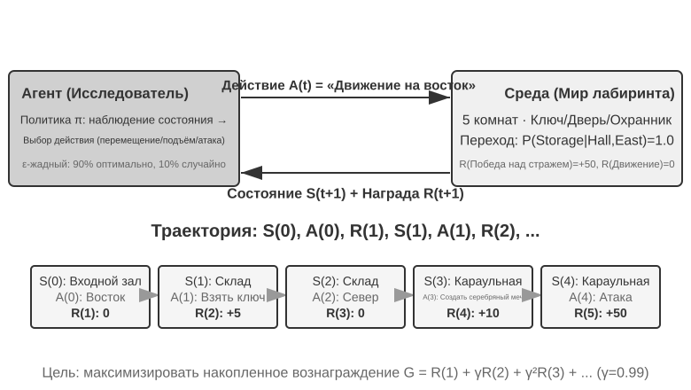
В результате взаимодействия возникает траектория — полная запись вида «состояние→действие→награда→новое состояние→действие→награда...», и качество политики в конечном счёте отражается именно в качестве траектории. Функция ценности (Value Function) отвечает на вопрос: «Если я сейчас нахожусь в этом состоянии и буду действовать согласно текущей политике, сколько всего наград я в итоге получу?» Это похоже на то, как опытный шахматист, взглянув на позицию, не просчитывает всё до конца, а интуитивно оценивает вероятность выигрыша в этой партии. (Если заменить здесь «текущую политику» на «оптимальную политику», получится оптимальная функция ценности — она понадобится далее в этой главе при рассмотрении уравнения оптимальности Беллмана.) Граница между агентом и средой подчиняется простому принципу: всё, что агент не может произвольно изменить, относится к среде.
Два уникальных признака, отличающих обучение с подкреплением от обучения с учителем (требующего размеченных правильных ответов) и обучения без учителя (обнаружение скрытых закономерностей в данных), — это поиск методом проб и ошибок (агент должен сам нащупывать, какие действия хороши, — учителя, прямо указывающего правильный ответ, нет) и отложенная награда (эффект действия может проявиться лишь через много шагов, например ценность удачного хода в шахматах становится видна только к концу партии). Отсюда возникает уникальный компромисс между исследованием и использованием (Exploration-Exploitation Tradeoff): если постоянно идти по знакомому пути, не научишься ничему новому; если постоянно пробовать наугад, никогда не дойдёшь до цели.
Система обучения с подкреплением включает пять ключевых элементов:
- Пространство действий: определяет полный набор действий, доступных агенту. Действия могут быть дискретными (например, «каким ходом пойти» в шахматах — ограниченный набор вариантов) или непрерывными (например, «на сколько градусов повернуть сустав» у робота — непрерывное числовое значение).
- Политика: правило поведения агента, определяющее, что делать в данном состоянии. Политика может быть простой (таблица соответствий: увидел состояние A — выполни действие X) или сложной (глубокая нейронная сеть).
- Сигнал награды: немедленная обратная связь от среды. Однако цель агента — максимизировать долгосрочную, а не мгновенную награду — это принципиальное различие, подобное тому, как в инвестициях нельзя смотреть только на сегодняшнее колебание курса, важна долгосрочная доходность.
- Функция ценности: оценивает, сколько всего кумулятивной награды можно получить в будущем, начиная с данного состояния, помогая агенту принимать разумные решения даже без немедленной обратной связи. Одно из важнейших открытий за шестьдесят лет исследований в области RL — центральная роль оценки ценности.
- Модель среды (опционально): предсказывает реакцию среды на действие. Методы с моделью среды называют методами на основе модели (сначала научиться предсказывать, как изменится среда, а затем планировать исходя из этого), методы без модели среды — безмодельными методами (не предсказывать среду, а учиться напрямую из опыта).
Таблица 7-3 сравнивает ключевые составляющие различных агентных систем, показывая универсальность концепции агента и помогая читателю увидеть различие в пространствах действий между традиционным RL-агентом и современным LLM-агентом.
Таблица 7-3. Сравнение ключевых элементов различных агентных систем
| Тип агента | Среда | Пространство действий | Сигнал награды |
|---|---|---|---|
| Новорождённый детёныш антилопы | Рельеф, гравитация, положение тела | Непрерывное высокой размерности (сокращение различных групп мышц) | Равновесие (+), падение (–) |
| Робот-пылесос | Планировка помещения, заряд батареи | Дискретное (направление, всасывание, зарядка) | Убранная площадь (+), разряд батареи (–) |
| Шахматный гроссмейстер | Положение на доске, ограничение по времени | Дискретное, конечное (допустимые ходы) | Выигрыш (+1), проигрыш (–1) |
| Агент службы поддержки клиентов | История диалога, база знаний | Открытое (размышление, реплика, вызов API) | Решение проблемы (+), время обработки (–) |
| Кодинг-агент-помощник | Документация требований, кодовая база | Открытое (размышление, поиск, редактирование, выполнение) | Прохождение тестов (+), внесение бага (–) |
Таблица раскрывает важное наблюдение: пространство действий традиционного RL-агента (шахматы, робототехника) замкнуто, тогда как пространство действий современного агента на основе LLM (служба поддержки клиентов, кодинг-помощник) открыто, почти бесконечно, и при этом может использовать особое действие — «внутреннее размышление» — для повышения своих возможностей.
Две парадигмы агентов: от MDP к LLM+RL¶
Самое фундаментальное различие между ними — в пространстве действий: MDP предполагает конечное и замкнутое пространство действий (вверх/вниз/взять/положить), тогда как пространство действий LLM — это открытая, комбинаторно взрывная последовательность естественного языка. Это различие определяет коренное расхождение двух парадигм в дизайне алгоритмов, эффективности использования данных и способности к обобщению. Разберём их по порядку.
Традиционная парадигма: MDP и Q-обучение.
MDP (Markov Decision Process, марковский процесс принятия решений) — это математический каркас обучения с подкреплением, определяющий такие ключевые элементы, как состояния, действия, награды. В его основе лежит марковское свойство: будущее зависит только от текущего состояния и не зависит от более ранней истории. По аналогии: в шахматах достаточно смотреть на текущую позицию на доске, чтобы принять оптимальный ход, — не нужно вспоминать, как были сделаны все предыдущие ходы. Это предположение упрощает задачу, но одновременно ограничивает способность моделировать зависимость от истории.
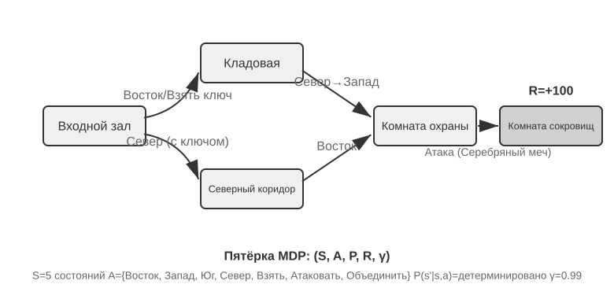
Ключевая особенность традиционного RL-агента — замкнутое пространство действий: все действия, которые агент может предпринять, образуют предопределённое конечное множество. Классические агенты для настольных игр — самый типичный пример: в го 361 позиция для хода хоть и огромна, но полностью определена и конечна; в шахматах разные фигуры двигаются по разным правилам, но действия всё равно можно перечислить; в играх Atari всего от нескольких до десятка с небольшим дискретных действий. Роботизированные агенты представляют непрерывное, но ограниченное пространство действий: углы суставов, скорость, сила захвата — непрерывные величины, но у всех есть чёткие физические границы (максимальный угол поворота, максимальный крутящий момент, ограничение скорости), а размерность определяется числом степеней свободы робота.
Эта замкнутость даёт вычислительное преимущество: можно перебрать все действия и оценить каждое по отдельности, что удобно для динамического программирования и поиска по дереву методом Монте-Карло, а функцию ценности действия можно приближать таблицей или простой функцией. Но она же ограничивает выразительность и способность к обобщению. Традиционный RL-агент начинает с нуля и учится чисто методом проб и ошибок — стартует со случайной политики, собирает опыт, обновляет функцию ценности или политику и повторяет это до сходимости.
В рамках этого каркаса один из самых базовых и важных алгоритмов — Q-обучение. Он поддерживает оценку ценности для каждой пары «состояние — действие»: сколько всего награды можно получить, если в состоянии s выполнить действие a, а затем всегда действовать по оптимальной политике? Интуитивно, насколько хорошо действие, зависит от немедленной отдачи, которую оно приносит, плюс от того, «насколько хорошо то состояние, в которое оно вас приводит».
Если записать эту интуицию в виде уравнения, получится ключевое рекурсивное соотношение знаменитого в учебниках по RL уравнения Беллмана (Bellman equation): истинная ценность действия = немедленная награда, полученная на этом шаге, + максимальная будущая ценность, доступная после перехода в следующее состояние:
где \(r\) — немедленная награда, \(s'\) — следующее состояние, в которое агент попадает после выполнения действия (здесь для наглядности записано в детерминированной форме; в стохастической среде нужно брать математическое ожидание по \(s'\)), а \(\gamma \in [0, 1)\) — коэффициент дисконтирования: он определяет, насколько сильно агент ценит будущее — чем ближе \(\gamma\) к 1, тем больше веса у долгосрочной отдачи, чем ближе к 0, тем сильнее агент заботится только о ближайшем результате. Упомянутая ранее неоднократно «накопленная награда» — это как раз сумма наград на каждом шаге, продисконтированных по \(\gamma\): \(\sum_{t} \gamma^{t} r_t\). После каждого действия алгоритм чуть-чуть подправляет старую оценку в сторону «того, что произошло на самом деле» — такая парадигма «корректировки старой оценки одним реальным шагом» называется обучением с временны́ми различиями (Temporal-Difference Learning, TD learning); после тысяч и тысяч проб и ошибок оценка постепенно приближается к истинному значению.
Два рисунка ниже показывают, соответственно, процесс исследования Q-обучением решётчатого мира и постепенную сходимость Q-значений.
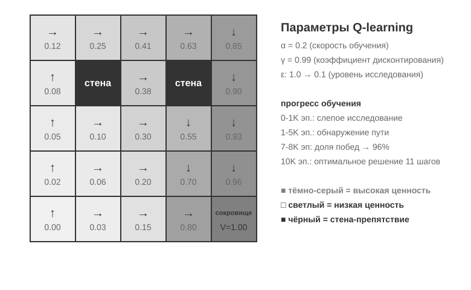
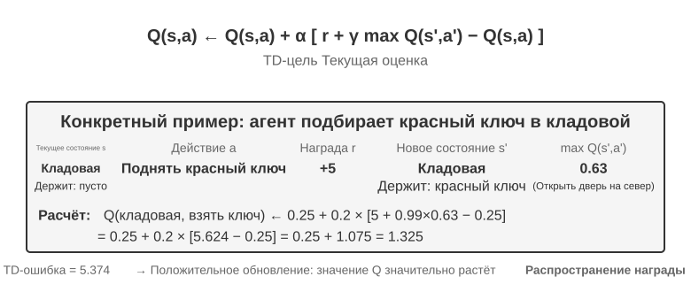
Q-обучение относится к особому классу методов вне политики (Off-Policy) — оно может обучаться оптимальной политике на данных, сгенерированных любой политикой (включая случайное исследование). Строгое определение понятий «в политике / вне политики» и их соответствие постобучению LLM см. в разделе «Сравнение алгоритмов обучения с подкреплением» далее.
Эксперимент 7-1 ★: поведение Q-обучения в игре про поиск сокровищ
Чтобы проверить особенности и ограничения Q-обучения, мы спроектировали игровую среду «поиск сокровищ». Эта среда содержит несколько ключевых сложностей: скрытые механики требуют, чтобы агент самостоятельно обнаружил соответствие между ключами и дверями, эффекты оружия и правила создания предметов; многошаговые зависимости означают, что для завершения задачи нужна правильная последовательность действий (оптимальное решение — 11 шагов); разреженная награда означает, что заметная награда даётся только за ключевые действия и итоговую победу, а на большинство промежуточных шагов не приходит вообще никакой обратной связи.
Агент на Q-обучении использует стандартную конфигурацию параметров и стратегию ε-жадного исследования (большую часть времени выбирается текущее лучшее действие, иногда предпринимается случайная попытка, а по мере обучения доля случайного исследования постепенно снижается).
Кривая обучения демонстрирует типичные черты (episode — это один полный проход игры, от начала до прохождения или провала, считается за один эпизод): - первые 1000 эпизодов: 0% побед, Q-таблица содержит всего 124 состояния, агент занимается слепым исследованием - первые 5000 эпизодов: устойчивых побед по-прежнему нет, Q-таблица — 133 состояния - 7000–8000 эпизодов: доля побед постепенно растёт с 34% до 96% - 10000 эпизодов: 100% побед, Q-таблица — 145 состояний, найдено оптимальное решение в 11 шагов
Всё обучение занимает менее 10 секунд (эффективность симуляции чрезвычайно высока), но требует почти 10000 полных попыток. Это демонстрирует ключевую особенность Q-обучения: нужно огромное количество случайного исследования, чтобы случайно пройти весь маршрут целиком, сигнал ценности распространяется очень медленно и должен многократно подкрепляться. Чисто символическое обучение без априорных знаний способно лишь на грубый перебор пространства состояний.
В игровом симуляторе 10000 попыток проб и ошибок занимают всего 10 секунд, и цена этого ничтожна. Но в реальных сценариях с агентами — где каждый звонок стоит денег, каждое действие в браузере вносит задержку, а каждое ошибочное решение может привести к необратимым последствиям — 10000 проб и ошибок совершенно неприемлемы. Именно поэтому современные агенты перешли на методы на основе LLM: они используют знания, накопленные при предобучении, чтобы принимать эффективные решения при минимальном числе взаимодействий.
У MDP есть три фундаментальных ограничения: низкая эффективность использования данных (нужно огромное число взаимодействий, чтобы освоить даже простую задачу), слабая способность к обобщению (знания, полученные в одной среде, с трудом переносятся в другую) и невозможность использовать априорные знания (каждую новую задачу приходится учить с нуля). Как только речь заходит о таком сложном пространстве состояний, как естественный язык или изображения высокой размерности, эти ограничения становятся особенно заметны.
Современная парадигма: агенты на основе LLM+RL.
Большие языковые модели принесли совершенно новую парадигму агентов, фундаментально изменив способ их построения — в частности, дизайн пространства действий.
Агент традиционного RL мог получать обратную связь только через изменение среды: сделать следующий ход, пройти шаг по лабиринту. Но LLM привнесли совершенно новый тип действия — внутреннее размышление. Размышление не меняет внешний мир, но заметно улучшает качество итогового действия. Этот сдвиг меняет всё: пространство действий агента теперь включает не только «что делать», но и «сколько думать и о чём».
Важнейшее нововведение — включение размышления (Thinking) в пространство действий как особого вида действия. В традиционном RL агент мог выполнять только внешние действия, изменяющие состояние среды (переместиться, атаковать, подобрать); а в LLM-агенте внутреннее размышление становится ключевым компонентом пространства действий — оно не меняет напрямую внешнюю среду, не даёт немедленной награды, почти не ограничено по количеству и обходится относительно дёшево.
Традиционному RL трудно работать с таким типом действий — причина в том, что пространство исследования слишком велико и лишено структуры: агент, обучающийся с нуля, подобен человеку с завязанными глазами, ищущему клад в пустыне, — он может только натыкаться на него случайно. LLM устроена иначе. Пройдя предобучение на огромных массивах текста, она уже впитала выработанные человечеством правила мышления: при решении математических задач следует схеме «выявить условия → вспомнить формулы → пошагово вычислить», при написании кода — «понять требования → спроектировать структуру → реализовать детали». Это заставляет мышление LLM двигаться по структурированным путям, что сильно сжимает пространство поиска. Поэтому даже без дополнительного RL-обучения предобученная LLM способна генерировать цепочку рассуждений (Chain of Thought, CoT) с базовой логикой. Эта базовая логика происходит из огромного объёма человеческих мыслительных процессов в обучающем корпусе (решение математических задач, комментарии к коду, ответы в дебатах и т. д.) — модель через предсказание следующего токена неявно научилась тому, «какой должна быть форма рассуждения на следующем шаге».
Постобучение с помощью RL, в свою очередь, через внешнюю награду учит LLM более эффективно применять эти правила в конкретных задачах. Сама структура языка тоже даёт своего рода скрытую внутреннюю награду: логически связная цепочка рассуждений (например, «поскольку нужно перевести иностранную валюту в доллары, поэтому сначала нужно узнать курс обмена») генерируется с высокой вероятностью, а логически бессвязная (например, «поскольку нужно перевести валюту, поэтому сначала нужно узнать погоду») — с крайне низкой, что естественным образом направляет модель к разумным путям рассуждения.
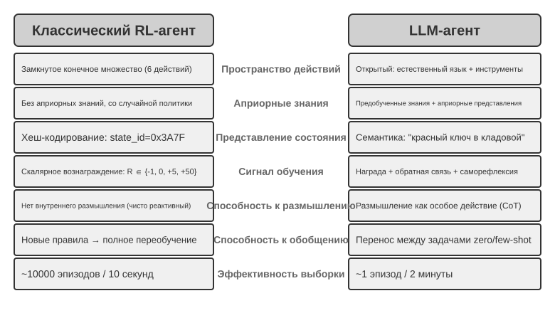
Эта способность мыслить, опирающаяся на внутренние правила языка, позволяет LLM-агенту понимать инструкции, которых он никогда раньше не видел (обобщение без примеров, zero-shot), а также осваивать новые задачи по минимальному числу примеров (адаптация по нескольким примерам, few-shot) — что кардинально отличается от парадигмы традиционного MDP-агента, требующей огромного числа проб и ошибок. Кроме того, новая парадигма обладает такими способностями, как комбинаторное обобщение (перекомбинирование уже известных понятий для новых ситуаций), обучение в контексте (быстрая адаптация через подсказки и примеры) и мультимодальное понимание (естественная интеграция зрения, языка, действий и других модальностей). Стоит отметить, что эффект обучения в контексте (обобщение без примеров, адаптация по нескольким примерам) и его внутренний механизм — это разные вещи: как отмечалось во второй главе, механизм внимания по своей работе больше похож на поиск, чем на рассуждение, но это никак не мешает ему давать мощный практический эффект в адаптации к задачам.
Эволюция от замкнутого пространства действий к открытому отражает фундаментальный сдвиг парадигмы ИИ-агентов. Помимо внутреннего размышления, разнообразие параметров инструментов (запросы на естественном языке, программный код, сложные JSON-структуры, мультимодальный контент) делает фактическое пространство действий практически бесконечным — интерпретатор кода теоретически может выполнить любую вычислимую задачу, а поисковый инструмент способен исследовать всё информационное пространство интернета. Это порождает как новые возможности (агент может браться за ранее невиданные задачи, решать сложные проблемы путём комбинирования базовых инструментов), так и новые вызовы (как определять и оптимизировать функцию награды в открытой среде, как эффективно вести поиск в бесконечном пространстве действий).
На примере таких моделей, как Kimi K3, оптимизированных под вызов инструментов и длинные цепочки рассуждений, можно увидеть типичное направление парадигмы LLM+RL: на базе масштабного языкового предобучения постобучение усиливает способности к декомпозиции задач, вызову инструментов и самокоррекции. OpenVLA (подробнее в главе 9), в свою очередь, демонстрирует парадигму архитектуры VLA (визуально-языково-действенной модели) эпохи LLM: визуальный кодировщик обрабатывает наблюдения среды, языковая модель понимает инструкции и рассуждает, декодер действий генерирует управляющие сигналы — так реализуется управление, обусловленное языком, и обобщение между задачами. Нужно уточнить: сам OpenVLA обучен методом имитационного обучения (поведенческого клонирования) на почти миллионе роботизированных демонстрационных траекторий, то есть по своей природе относится к SFT, а не к RL; истинным представителем того, как RL действительно внедряется в робототехнику и как поверх архитектуры типа VLA проводится дальнейшая оптимизация с помощью награды, служит SimpleVLA-RL из эксперимента 7-13 далее в этой главе.
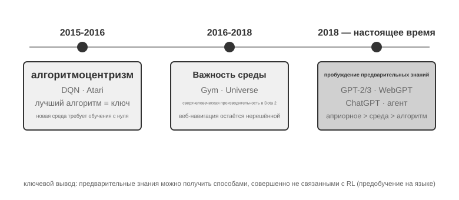
Путь исследований OpenAI (подробно описанный Яо Шуньюем (доцентом Принстонского университета, автором статьи ReAct) в «The Second Half») раскрывает эволюцию мышления. Первый этап (2015–2016), алгоритмоцентризм: убеждение, что ключ — в лучших алгоритмах; прогресс достигнут в стандартных средах вроде Atari, но при переходе в новую среду обучение приходилось начинать заново. Второй этап (2016–2018), важность среды: Gym стандартизировал разнообразные задачи, Universe и World of Bits пытались превратить весь интернет в тренировочную среду для RL, Dota 2 стремилась к сверхчеловеческим результатам в конкретной сложной среде. Идея была ясной, но универсальное использование компьютера и навигация по веб-страницам так и не поддавались прорыву.
Третий этап (с 2018 года по настоящее время), пробуждение приоритета — приоритета априорных знаний: GPT-2/GPT-3 продемонстрировали мощь языкового предобучения, а WebGPT и ChatGPT доказали, что эти априорные знания можно превратить в практичных агентов. Важнейшее открытие: априорные знания можно получить способом, вообще не связанным с RL. Это контринтуитивная истина: приоритеты исследователей RL на протяжении десятилетий, возможно, были полностью перевёрнуты — не «алгоритм > среда > априорные знания», а «априорные знания > среда > алгоритм».
Эксперимент 7-2 ★★: сравнительное исследование традиционного RL и LLM-агента
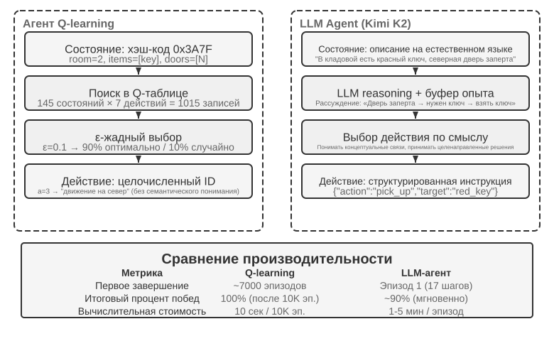
В одной и той же игре про поиск сокровищ сравнили Q-обучение и LLM-агента (Kimi K3, поддерживающий буфер опыта не более 50 записей). Результат оказался поразительным: LLM-агент прошёл игру уже в первом же прогоне за 18 шагов.
Начальная фаза (целенаправленное исследование): подбирает ржавый меч («оружие лучше, чем ничего»), систематически исследует карту, обнаружив, что северная дверь заперта, делает вывод «нужно найти ключ» и переключается на исследование кладовой, где последовательно получает красный ключ и магический кристалл. Средняя фаза (понимание механики и активный синтез): понимает правило «ключи используются автоматически» и заранее предвидит, что ржавого меча не хватит против стража, поэтому на 8-м шаге сам синтезирует серебряный меч. Финальная фаза (исполнение и исправление ошибок): с серебряным мечом направляется на север, на 13-м шаге побеждает сильного стража, при этом попутно совершает пару неэффективных попыток (повторный взмах мечом/отступление), и в итоге на 18-м шаге получает сокровище дракона.
Это демонстрирует фундаментальное различие между семантическим пониманием и символическим отображением. LLM-агент понимает концептуальную структуру игры, у каждого его шага есть цель и логическое обоснование. А для Q-обучения «дверь», «ключ», «меч» — это всего лишь бессмысленные комбинации символов, связи между которыми можно обнаружить лишь постепенно, через масштабное статистическое обучение.
Вычислительная стоимость создаёт интересный парадокс: Q-обучению нужно всего 10 секунд, чтобы пройти 10000 эпизодов, а LLM-агенту требуется 1–2 минуты на один эпизод. Но в реальных задачах затраты времени, денег и риска на каждое взаимодействие значительно превышают чисто вычислительную стоимость, поэтому сравнивать только время работы GPU было бы нечестно. Более важное наблюдение: успех LLM-агента объясняется не тем, что у него «лучший алгоритм обучения», а тем, что он несёт с собой огромный объём априорных знаний. Когда правила игры меняются, Q-обучению требуется полное переобучение с нуля, а LLM-агент способен адаптироваться напрямую через рассуждение. Отсюда можно вывести практический принцип проектирования: в сценариях с низкой стоимостью симуляции и большим числом повторений традиционный RL по-прежнему ценен; в реальных сценариях с высокой стоимостью взаимодействия и потребностью в быстрой адаптации эффективность использования данных у LLM-агента более практична.
Что касается взаимодействия между контекстной адаптацией, обновлением внешних артефактов и обновлением параметров, концептуальная карта уже представлена в первой главе, и в конце этой главы, в разделе «Полная картина», мы к этой теме вернёмся. Основная линия этой главы — постобучение: то, как способности, которые трудно полностью выразить внешними правилами, «прописываются» в параметрах модели.
Основы предобучения моделей [Дополнительное чтение]¶
Чтобы понять, почему методы постобучения работают, нужно сначала разобраться, что закладывает предобучение. Постобучение (SFT и RL) по сути представляет собой оптимизацию внутри пространства представлений, построенного на этапе предобучения — структура знаний, заложенная предобучением, определяет потолок возможностей постобучения. Поэтому мы рассмотрим ключевые аспекты предобучения на трёх экспериментах: обучение небольшой языковой модели с нуля, расширение визуальных возможностей и внедрение знания нового языка. Эти три эксперимента носят вспомогательный характер и помогают читателю выработать интуитивное понимание предобучения (Pretraining, то есть исходного обучения на масштабных данных, в ходе которого модель усваивает базовые закономерности языка и знания о мире) — читатели, уже знакомые с процессом предобучения, могут этот раздел пропустить.
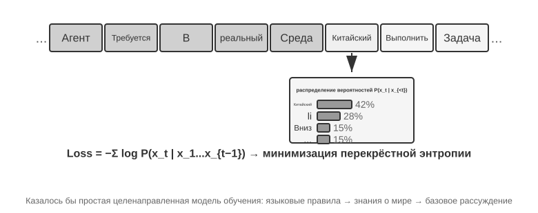
Обучение языковой модели следует трёхэтапному процессу «токенизация — предобучение — постобучение». Токенизация (tokenization) разбивает текст на дискретные единицы — например, фраза «Мне нравится программировать» может быть разбита на токены «Мне», «нравится», «программ», «ировать» — эти токены и есть минимальные единицы, с которыми работает модель. Задача предобучения концептуально проста: модели показывают первую часть текста и просят предсказать, каким будет следующий токен. Модель сравнивает своё предсказание с правильным ответом (эта разница называется потерей (Loss); чем меньше потеря, тем точнее предсказание) и постоянно корректирует свои параметры. После многократного повторения на огромных объёмах текста модель постепенно усваивает закономерности языка, знания о мире и базовые способности к рассуждению. После завершения предобучения модель умеет генерировать связный текст, но её вывод лишён структуры и плохо следует инструкциям. Постобучение с помощью SFT (обучение на размеченных парах вход-выход) и оптимизации предпочтений (например, DPO, которая учит модель выдавать ответы, более предпочтительные для человека) превращает её в практичного помощника.
Эксперимент 7-3 ★★: обучение LLM с нуля — сила алгоритмических улучшений
На примере MiniMind 2 (сто миллионов параметров) реализован полный цикл обучения на потребительском GPU. Благодаря двум алгоритмическим оптимизациям (QK Norm и оптимизатор Muon) скорость сходимости выросла в 3 раза, качество генерации заметно улучшилось — при этом затраты минимальны: общее время обучения около 14 часов, стоимость около 34 долларов.
Эффект по стадиям обучения: после предобучения модель может отвечать на фактологические вопросы вроде «самая высокая гора в мире», но формат нерегулярный; после SFT заметно улучшается следование инструкциям и формат вывода — модель умеет организовывать ответ ожидаемым образом; оптимизация предпочтений дополнительно снижает число фактических ошибок и неестественных формулировок. У модели со ста миллионами параметров всё ещё есть явные ограничения (легко ошибается на сложных вопросах), но вывод таков: при фиксированном небольшом бюджете алгоритмические улучшения выгоднее простого наращивания масштаба.
Эксперимент 7-4 ★★: обучение собственной VLM
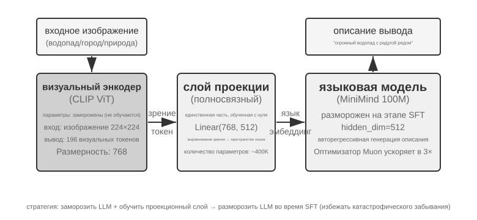
VLM объединяет визуальное восприятие и понимание языка в единой модели; ключевая сложность — межмодальное согласование, то есть увязка «увиденного» с «сказанным». Архитектура состоит из трёх компонентов: визуальный кодировщик (например, CLIP, параметры зафиксированы) извлекает семантические признаки изображения; проекционный слой (лёгкий, единственная часть, обучаемая с нуля) выступает «переводчиком» между визуальными признаками и языковой моделью, отображая визуальные признаки в пространство представлений, понятное языковой модели; языковая модель генерирует текст описания. Обучение построено по стратегии «заморозить LLM + обучать только проекционный слой», чтобы избежать катастрофического забывания (Catastrophic Forgetting, то есть потери старых навыков после освоения новых); после предварительного согласования LLM размораживается, и на качественных парах изображение-описание проводится SFT — детальность и точность описаний заметно улучшаются.
Этот эксперимент раскрывает базовую парадигму обучения мультимодальных моделей: переиспользование результатов одномодального предобучения и достижение межмодального согласования через обучение лёгкого проекционного слоя — эффективно и масштабируемо, но выразительная способность проекционного слоя ограничена и может стать узким местом для глубокого межмодального понимания. Тот же каркас «визуальный кодировщик + проекционный слой + LLM», если продвинуть его ещё на шаг вперёд и заставить модель выдавать действия, — это модель VLA (визуально-языково-действенная), которая будет подробно рассмотрена в главе 9.
Эксперимент 7-5 ★★: продолженное предобучение для изучения нового языка
На основе Mistral 7B v0.3 (предобучена в основном на английском, корейский язык практически не понимает) через продолженное предобучение на корейской Википедии внедряются знания корейского языка — это неконтролируемое обучение на данных нового языка поверх уже предобученной модели: модель уже обладает общей способностью к языковому моделированию, ей нужно лишь адаптироваться к новому распределению данных, что обходится намного дешевле обучения с нуля. Ключевой инженерный момент — использование смешанных данных (около 80% корейского + 20% английского) для смягчения катастрофического забывания: слишком высокая доля целевого языка приводит к деградации исходного языка, слишком низкая — к недостаточной эффективности обучения. В конце проводится SFT на корейских инструктивных данных для получения практичной способности вести диалог на корейском. Вывод этого эксперимента ещё пригодится нам в конце главы при описании полной картины: чтобы модель запомнила большой объём новых предметных знаний, нужно продолженное предобучение, а не SFT.
Три эксперимента по предобучению вместе раскрывают одну закономерность: при ограниченном бюджете алгоритмические улучшения и архитектурные новшества выгоднее простого наращивания масштаба. Что важнее, предобучение наделяет модель описательными знаниями и способностью к языковому моделированию, но ей не хватает структурированного следования инструкциям и целенаправленного поведения — именно этот пробел призван заполнить SFT.
Имея базовые возможности, заложенные предобучением, следующий шаг — превратить универсальную модель в практичного агента с помощью постобучения. Первый этап постобучения — дообучение с учителем (SFT).
SFT (дообучение с учителем)¶
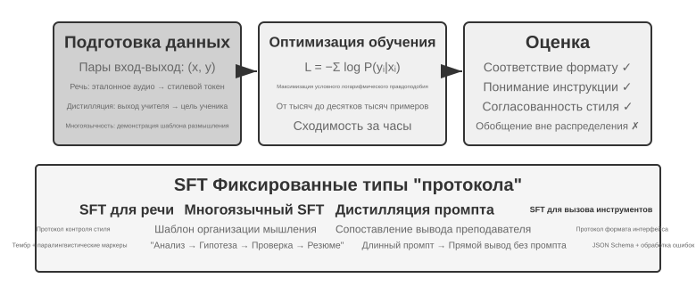
Раздел 7.1 уже раскрыл суть SFT (смена данных, «предсказание следующего слова» с расчётом потерь только на ответе). В этом разделе на четырёх экспериментах посмотрим, что именно фиксирует этот механизм «записи устойчивых соответствий и протоколов в параметры» применительно к разным задачам. Ценность SFT — не во внедрении новых знаний, а в фиксации протокола: соответствия, форматы взаимодействия, стилевые нормы записываются в параметры, так что при выводе не требуется громоздкий промпт, чтобы получить ожидаемый результат. Обычно достаточно от нескольких тысяч до нескольких десятков тысяч качественных примеров, чтобы заложить базовую способность вести диалог и следовать инструкциям.
Расплата за эффективность — сильная зависимость от распределения обучающих данных: SFT склонен к запоминанию, а не к обобщению, и при столкновении с ситуацией, не встречавшейся при обучении, качество часто заметно падает. Следующие эксперименты покажут этот процесс «фиксации протокола» под разными углами.
Эксперимент 7-6 ★★★: SFT для речи — от «клонирования голоса» к «моделированию паралингвистики»
[Расширенный эксперимент]На примере Orpheus (клонирование голоса через контекстные подсказки) и Sesame (моделирование паралингвистических маркеров) показывается, как «стиль голоса и манера речи» записываются в параметры. Подходы различаются:
- Orpheus: сжимает звуковую волну в последовательность токенов и, соединяя референсные аудиозаписи одного и того же говорящего, учит модель «говорить голосом этого человека», добиваясь согласованности тембра между предложениями.
- Sesame: абстрагирует смех, вздохи и другие паралингвистические явления в специальные маркеры вроде
<laugh>,<sigh>и обучает модель «увидев маркер — издавать соответствующий звук».В экспрессивных задачах SFT фиксирует протокол управления стилем и структурированные привычки выражения, а не фактические знания или сложное рассуждение. Ключевой фактор — разнообразие обучающих данных и качество разметки. Типичные ошибки: слишком мало говорящих в обучающих данных — и все звучат одинаково; переобучение (Overfitting, то есть механическое запоминание моделью деталей обучающих примеров, из-за чего в новых ситуациях она показывает результат ещё хуже) на маркерах приводит к «механическому смеху».
Эксперимент 7-7 ★★★: многоязычное мышление — заставляем модель думать на любом языке
[Расширенный эксперимент]Большинство моделей с режимом размышления «думают» только по-английски: независимо от языка запроса, внутренняя цепочка рассуждений модели почти всегда на английском, потому что качественные примеры рассуждений в обучающих данных в основном написаны по-английски. Цель этого эксперимента проста — научить модель размышлять на заданном языке.
Метод заключается в SFT модели gpt-oss-20b: в системную инструкцию добавляется фраза
reasoning language: German(или на другом языке), затем модель обучается на примерах рассуждений на английском, испанском, французском и других языках. В обучающих данных полностью отсутствует китайский, но после завершения обучения достаточно установить reasoning language в Chinese — и модель способна вести полную цепочку рассуждений на китайском. Это обобщение на новый язык без единого примера (zero-shot) и есть самая интересная находка эксперимента. Важно понимать: это не способность к обобщению самого SFT. Многоязычное предобучение уже сформировало в модели общее межъязыковое пространство представлений, а SFT лишь активировал эту межъязыковую способность, заложенную ещё на этапе предобучения.Эксперимент 7-8 ★★: дистилляция промпта — воспроизведение практичных возможностей при меньших затратах
В реальных приложениях, чтобы модель справлялась со сложными задачами, часто требуются громоздкие системные промпты (тысячи, а то и десятки тысяч токенов), и каждый вызов увеличивает задержку и стоимость. При использовании крупных моделей с режимом размышления внутренние токены рассуждения дополнительно увеличивают затраты. Идея дистилляции промпта — сжать поведение «длинный промпт + модель-учитель с размышлением» в «короткий промпт (или его отсутствие) + модель-ученик без размышления». Учитель генерирует качественные ответы при полном промпте и в режиме размышления, а обучающие данные сохраняют только пользовательский ввод и итоговый вывод, отбрасывая громоздкий промпт и промежуточные рассуждения. Ученик учится «сразу выдавать вывод»; после дистилляции на тех же входных данных качество близко к учительскому, а поскольку не нужно обрабатывать громоздкий промпт и токены рассуждения, задержка и стоимость заметно снижаются.
Дистилляцию можно проводить по двум измерениям: «от большой к малой» (замена большой модели моделью среднего или малого размера — компромисс между стоимостью и качеством) и «от размышления к неразмышлению» (при том же размере модели явная CoT сворачивается в неявные параметризованные знания, что даёт ускорение отклика в 20-30 раз). Эти два направления не противоречат друг другу и часто используются вместе в продакшене. Важно учитывать, что дистилляция наследует ограничения учителя: если у учителя есть систематические ошибки в редких случаях, ученик их дополнительно закрепит в параметрах; если учитель полагается на инструменты для обеспечения корректности, простая дистилляция вывода потеряет устойчивость, которую давали инструменты. Практический вывод: когда форма продукта стабильна, распределение входов предсказуемо, а бюджет ограничен, дистилляция промпта — хороший инструмент оптимизации; а на стадии исследования или пока задача ещё не устоялась, явное размышление и редактируемая инженерия промптов остаются основным способом быстрого перебора вариантов.
Эксперимент 7-9 ★★★: дистилляция цепочки рассуждений (Chain of Thought, CoT)
[Расширенный эксперимент]Дистилляция промпта отбрасывает процесс рассуждения, а дистилляция CoT, наоборот, переносит полную траекторию рассуждений сильной модели-учителя на модель-ученика. Дистилляция CoT от достаточно сильного учителя при том же числе параметров позволяет восстановить 70-80% возможностей учителя. Для команд, не стремящихся расширить границы возможностей передовых моделей, но желающих получить автономную и контролируемую модель, это самая практичная стратегия «последователя». Серия дистиллированных небольших моделей, выпущенных одновременно с DeepSeek-R1 в открытом доступе (SFT моделей семейства Qwen и Llama на траекториях рассуждений R1), — как раз представитель этого подхода.
Контекст: явление «мысленной стены». Некоторые закрытые модели с режимом размышления (например, серии o от OpenAI, серия Gemini) при размышлении генерируют внутреннюю цепочку рассуждений, но пользователь видит не исходный процесс рассуждения — из соображений защиты от дистилляции, безопасности и продуктового опыта производители обычно переписывают или сокращают CoT перед выводом, и самая ценная исходная цепочка рассуждений скрыта за API. Именно поэтому в этом эксперименте в качестве учителя выбрана модель с открытым режимом размышления: DeepSeek-R1, QwQ и подобные модели раскрывают полную цепочку рассуждений в тегах
<think>, и дистилляция технически и лицензионно допустима (перед использованием всё же стоит проверить условия лицензии модели в отношении дистиллированных продуктов).Дизайн эксперимента: процесс из трёх шагов. Шаг первый, сбор траекторий: из целевого распределения задач (например, математика, код) отбираются задачи, открытая модель-учитель генерирует полные траектории «рассуждение + ответ», а траектории с неверным итоговым ответом отфильтровываются с помощью верификатора на основе правил — иначе ученик будет подражать и ошибочному рассуждению. Шаг второй, обучение SFT: на парах «задача →
<think>траектория рассуждения</think>+ итоговый ответ» проводится стандартный SFT на небольшой модели (например, масштаба 7B). Шаг третий, сравнительная оценка: на одном и том же бенчмарке сравниваются модель-ученик до и после дистилляции и модель-учитель, оценивается доля восстановленных возможностей.Критерий приёмки: модель-ученик после дистилляции показывает заметное улучшение на бенчмарках по математике/коду по сравнению с состоянием до дистилляции, а в траекториях рассуждений появляются характерные для учителя рефлексия, возврат к предыдущим шагам и перепроверка вычислений. При этом стоит учитывать цену дистилляции: ученик унаследует систематические ошибки учителя и его привычку к избыточно длинным рассуждениям (последнее можно доработать, объединив с идеей AdaptThink из эксперимента 7-10).
У этих четырёх экспериментов есть общая черта — «запись устойчивых соответствий и протоколов в параметры»: SFT для речи фиксирует протокол управления стилем, многоязычный SFT фиксирует шаблон организации рассуждения, дистилляционный SFT фиксирует прямое соответствие входа выходу. Их объединяет чёткая цель, ясный формат и стабильный критерий оценки — благодаря этому SFT достигает результата при крайне высокой эффективности использования выборки; но стоит распределению измениться, как склонность к запоминанию проявляется в виде падения качества. Это и есть проявление на уровне эксперимента того разграничения «запоминание против обобщения», о котором говорилось в разделе 7.1 «Сущностное различие между SFT и RL».
Когда выбирать SFT, а когда RL¶
Раздел 7.1 разъяснил сущностное различие между SFT и RL, а этот раздел отвечает на более практичный вопрос: какой из них выбрать для конкретной задачи? Некоторые выводы приведённой ниже схемы принятия решений будут дополнительно проверены в последующих экспериментах по RL (эксперименты 7-10, 7-11); читатель может для начала выработать предварительное суждение, а затем вернуться к этому разделу после прочтения части о RL для сверки.
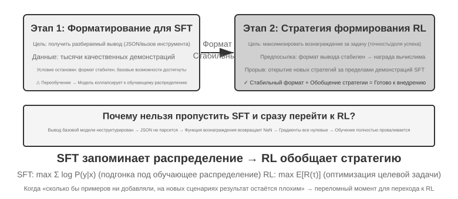
SFT подходит для фиксации формата (вывод в JSON, стиль диалога), в сценариях с качественными экспертными демонстрациями и высокой согласованностью между средой обучения и среда эксплуатации. Сценарии, где RL обязателен, иные: когда между реальной средой эксплуатации и средой обучения есть систематическое расхождение (например, при обучении карты J/Q/K считались за 10, а в эксплуатации стали 11/12/13 — правила изменились; или при обучении использовались чёрные масти, а в эксплуатации встречаются красные — изменился внешний вид), когда нужно искать оптимальную политику (сами экспертные демонстрации не обязательно оптимальны), или когда стоимость разметки слишком высока и невозможно предоставить демонстрацию для каждого пути — тогда нужен RL.
Самая надёжная стратегия — двухэтапный процесс «сначала SFT, потом RL». Основная цель SFT — не довести качество задачи до предела, а установить стабильность формата вывода: убедиться, что модель способна выдавать разбираемый JSON, корректно вызывать интерфейсы инструментов. Только когда формат вывода стабилен, сигнал вознаграждения RL можно надёжно вычислить. Прямое применение RL к базовой модели без предварительного SFT часто заканчивается неудачей из-за хаотичного формата вывода и невозможности вычислить вознаграждение — впрочем, у этого вывода есть граничные условия: он получен для сочетания «относительно небольшая базовая модель + строгие требования к структурированному выводу» (как в эксперименте 7-11 далее). DeepSeek-R1-Zero доказал, что достаточно сильная базовая модель способна пропустить SFT и успешно обучиться сразу через RL, при этом у неё возникают рефлексия и длинная цепочка рассуждений — ценой становится плохая читаемость вывода и смешение нескольких языков, именно поэтому DeepSeek в итоге вернул «холодный старт с SFT» в R1. Этот путь туда-обратно от Zero к холодному старту в R1 — лучшая иллюстрация принципа «сначала форма, потом суть»: RL способен сам вырастить «суть» (политику и способность к рассуждению), но «форму» (формат и читаемость) всё равно быстрее и надёжнее задаёт SFT.
У каждого подхода своя цена: SFT эффективен по выборке и быстро сходится, но обобщение ограничено; RL способен выучить переносимую политику, но эффективность использования выборки низкая, а обучение нестабильно. Практичный критерий такой: когда «сколько бы демонстрационных данных ни добавляй, результат в новом сценарии всё равно не растёт» — это и есть тот переломный момент, когда пора переходить к RL: корень проблемы не в количестве демонстраций, а в самой цели оптимизации SFT.
При принятии решения на практике можно придерживаться следующего порядка:
- Сначала спросите себя: нужно ли постобучение вообще? Если проблему можно решить с помощью Harness-инженерии (оптимизация промпта, проектирование инструментов, управление контекстом), обучать модель не требуется. Большинство приложений на базе агентов относятся именно к этой категории.
- Если обучение нужно: сначала попробуйте SFT. Он подходит для фиксации формата вывода (JSON-схема, формат вызова API), фиксации протокольных знаний (терминология, формат вывода, привычки процесса — то есть «как говорить, как делать»), унификации стиля (тон, длина). Но учтите: SFT не подходит для внедрения большого объёма фактических знаний («что известно») — для этого нужно продолженное предобучение или RAG (подробнее в «полной картине» в конце главы). SFT дёшев и даёт быстрый эффект.
- Когда SFT недостаточно: добавьте RL. Он подходит, когда нужно обобщение на новые сценарии, поиск оптимальной политики, или когда стоимость разметки слишком высока. Обязательно сначала стабилизируйте формат вывода с помощью SFT, а затем на этой основе применяйте RL.
Однораундовое обучение с подкреплением: память против обобщения на контрасте¶
«Однораундовое» означает, что задача выполняется за одно взаимодействие: модель получает вход, выдаёт выход, получает награду — без необходимости поддерживать состояние между шагами. Такая упрощённая постановка позволяет сосредоточиться на принципиальных различиях в механизмах обучения между SFT и RL, не отвлекаясь на сложность многоходовых взаимодействий. Однораундовый сценарий даёт чистые условия для контрольного эксперимента: одна и та же задача, одна и та же базовая модель, одинаковый вычислительный бюджет, единственная переменная — метод обучения. Первый эксперимент показывает, как RL учится метаполитике «когда стоит размышлять»; второй систематически количественно демонстрирует принцип «SFT запоминает, RL обобщает» на арифметической карточной игре, требующей рассуждений.
Прежде чем перейти к экспериментам, установим минимальную интуицию об алгоритмах RL, чтобы понимать термины, встречающиеся в дальнейших экспериментах (полные формулы и сравнение оставлены на раздел «Сравнение алгоритмов обучения с подкреплением» позже в этой главе). Большая часть RL-обучения в этой главе основана на градиенте политики: модель генерирует несколько ответов на один и тот же вопрос, ответы с высокой наградой повышают вероятность своего появления, а с низкой — понижают — «больше движения в сторону высокой награды, меньше — в сторону низкой». Чтобы избежать слишком резкого обновления за один шаг, уводящего модель не туда, основной алгоритм PPO обрезает величину обновления на каждом шаге (упоминаемый в экспериментах ниже «PPO с сетью ценности» относится именно к этому; сеть ценности используется для оценки базовой линии и более точного вычисления преимущества); другой алгоритм, GRPO, не обучает сеть ценности, а определяет относительное качество каждого ответа через «сравнение нескольких ответов на один и тот же вопрос друг с другом». Держа эту интуицию в голове, будет достаточно, чтобы понять два следующих эксперимента.
Эксперимент 7-10 ★★: AdaptThink — учимся «когда не думать»
Крупные размышляющие модели (например, OpenAI o1, DeepSeek-R1) генерируют развёрнутую цепочку рассуждений на любой вопрос, что создаёт лишние накладные расходы на простых задачах. Эксперимент сначала подтверждает интуитивное предположение: режим NoThinking (пропуск размышления через
<think></think>) на простых задачах даёт сопоставимую или даже более высокую производительность, и только на трудных задачах преимущество режима Thinking проявляется.AdaptThink с помощью RL обучает модель адаптивно выбирать режим. Два ключевых компонента:
- Целевая функция с ограничением: поощряет NoThinking, одновременно гарантируя, что общая производительность не падает.
- Стратегия сэмплирования по значимости: балансирует примеры Thinking/NoThinking, решая проблему холодного старта (Cold Start, здесь имеется в виду специфическая проблема начала обучения, когда исходная модель почти всегда выбирает Thinking, а примеров ветви NoThinking крайне мало и обучение на них не идёт; это отличается от упомянутого ранее использования DeepSeek-R1 небольшого количества демонстрационных данных для «холодного старта SFT» — там речь о другом контексте).
«Сэмплирование по значимости», встречающееся здесь, — распространённый статистический метод: когда распределение сэмплов смещено в сторону одного класса, взвешивание примеров «исправляет» распределение, позволяя обучающему сигналу равномерно охватывать все классы. Эта идея неоднократно используется в алгоритмах RL, обсуждаемых далее в книге, — PPO, DAPO и других.
Результаты оценки: на нескольких математических benchmark длина ответа сократилась на 45–64%, а точность не упала, а выросла. Модель научилась выбирать в зависимости от характеристик задачи: на структурно понятных простых задачах отвечает напрямую, на трудных, требующих многошагового вывода, сохраняет полную цепочку рассуждений, и даже на невиданных ранее типах задач корректно оценивает сложность.
В сочетании с дистилляцией промптов образуется взаимодополняющая «быстрая-медленная двойная система»: дистилляция снижает долю задач, требующих размышления, AdaptThink оптимизирует стратегию запуска для оставшихся задач, вместе достигая максимальной эффективности размышления.
Эксперимент 7-11 ★★: GeneralPoints — контраст «память против обобщения» в однораундовом RL
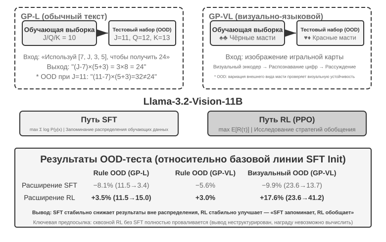
GeneralPoints — арифметическая карточная игра, требующая рассуждений, предложенная Chu и соавторами (2025, «SFT Memorizes, RL Generalizes», arXiv:2501.17161), специально для оценки способности модели к обобщению. Цель задачи похожа на игру «24 очка»: используя числа на четырёх картах, с помощью операций сложения, вычитания, умножения и деления, применяя каждое число ровно один раз, получить целевое число 24. В эксперименте разработаны два варианта: текстовый GP-L и визуальный GP-VL, что позволяет в рамках одной схемы отдельно исследовать обобщение по правилам и визуальное обобщение.
Вариант с правилами: при обучении карты J/Q/K считаются как 10, при тестировании они считаются как 11/12/13 соответственно, что гарантирует появление в тестовом наборе не встречавшихся при обучении числовых комбинаций (вычисления с 11, 12, 13), строго оценивая способность к обобщению. Визуальный вариант: при обучении используются чёрные масти (♠♣), при тестировании — красные (♥♦), что оценивает устойчивость к изменению визуального облика. На базе Llama-3.2-Vision-11B следуют стандартному процессу постобучения: сначала инициализация через SFT для базовой способности следовать инструкциям, затем при одинаковом вычислительном бюджете расширяются отдельно SFT- и RL-обучение (в RL-части используется алгоритм PPO с сетью ценности), обучение проводится на данных с единственным правилом (J/Q/K=10), оценка — на тестовых наборах внутри распределения (ID) и вне распределения (OOD).
Результаты ясно раскрывают принципиальное различие. OOD по правилам: RL на GP-L даёт +3,5% (11,5%→15,0%), SFT падает на 8,1% (11,5%→3,4%); на GP-VL RL +3,0%, SFT падает на 5,6%. OOD по визуальному признаку: RL на GP-VL даёт +17,6% (23,6%→41,2%), SFT падает на 9,9% (23,6%→13,7%).
Отслеживая точность визуального распознавания, обнаружено следующее: RL за счёт оптимизации, ориентированной на результат, улучшает базовый визуальный энкодер, и это улучшение сильно коррелирует с ростом общей производительности; а SFT, из-за чрезмерной подгонки под шаблоны токенов в процессе размышления, игнорирует обучение на визуальных токенах, что приводит к снижению точности распознавания.
Эксперимент также выявил необходимость SFT для RL: в условиях данного эксперимента (базовая модель уровня Llama-3.2-Vision-11B плюс строгие требования к структурированному выводу) прямое сквозное RL-обучение без предварительного SFT полностью проваливается — базовая модель не способна выдавать структурированный вывод, и награду в принципе невозможно вычислить. Обратите внимание: это вывод для конкретных условий, а не универсальное правило — достаточно мощная базовая модель может пропустить SFT и успешно перейти сразу к RL (см. обсуждение DeepSeek-R1-Zero выше). Ещё одно примечательное наблюдение: чем больше итераций проверки, тем лучше обобщение: 10 итераций дают +5,99% против +0,48% при 1 итерации, что указывает на масштабирование вычислений во время размышления как ключевой фактор обобщения RL.
Почему производительность SFT рушится при смещении распределения, а у RL наоборот улучшается? SFT учит отображение «увидев такой вход — выдай такой ответ»: во время обучения J/Q/K всегда равны 10, и модель запоминает фиксированный шаблон «встретил J/Q/K — считай за 10»; при тестировании J=11, но модель по-прежнему считает как 10, естественно ошибаясь. RL же учит более общую стратегию — «какой вычислительный процесс приводит к правильному ответу»: когда J становится 11, модель RL пересчитывает по той же стратегии заново, а не подставляет запомненный ответ. Это и есть суть различия между «памятью» и «обобщением».
Основной вклад этого эксперимента — систематическая количественная демонстрация феномена «SFT запоминает, RL обобщает», доказывающая, что эта закономерность справедлива как для чисто языковой, так и для визуально-языковой модальности, и раскрывающая синергию между SFT и RL: SFT обеспечивает стабильность формата, а RL, опираясь на неё, преодолевает границы памяти — и то и другое необходимо. Эта парадигма обучения «сначала форма, потом дух» — заимствуя термин из китайской живописи: сначала точно прорисовать внешнюю форму (формат, структуру), затем добиваться внутреннего духа (обобщения, стратегии) — закладывает методологическую основу для последующих многораундовых, мультимодальных задач.
RLHF: от человеческих предпочтений к модели вознаграждения¶
У предыдущих экспериментов было общее условие: задача имеет проверяемый правильный/неправильный ответ — верна ли формула, соответствует ли формат требованиям — и правило-верификатор способен выставить оценку. Но то, что развёрнутые сейчас диалоговые модели «ведут себя как уместный, безопасный ассистент», обеспечивается другим, более рано сложившимся подходом: RLHF (Reinforcement Learning from Human Feedback, обучение с подкреплением на основе обратной связи от человека). Понимание RLHF нужно и для того, чтобы понять, откуда берётся качество диалога и безопасность выравнивания в продуктах вроде ChatGPT, и как предпосылка для понимания появляющихся далее в различных алгоритмах понятий KL-штрафа, reward hacking и других.
Трёхэтапный пайплайн InstructGPT. InstructGPT2 от OpenAI установил стандартный процесс, используемый по сей день:
- SFT: тонкая настройка предобученной модели на парах «инструкция—ответ», подготовленных людьми, для формирования базовой способности следовать инструкциям — то, что обсуждалось ранее в разделе «SFT (дообучение с учителем)».
- Обучение модели вознаграждения (Reward Model, RM): модель генерирует несколько ответов на один и тот же промпт, разметчики попарно сравнивают их и отмечают, какой предпочтительнее. На этих парах предпочтений обучается модель, выставляющая оценку; цель обучения строится на основе модели Брэдли-Терри:
$\(\mathcal{L}_{\text{RM}} = -\log \sigma\big(r(x, y_w) - r(x, y_l)\big)\)$
где \(y_w\) — предпочтённый ответ, \(y_l\) — отклонённый ответ, \(\sigma\) — сигмоида. Интуиция очень проста: заставить RM ставить более высокую оценку предпочтённому ответу. Причина, по которой собираются сравнения, а не абсолютные оценки, в том, что людям сложно последовательно давать абсолютные баллы («этот ответ стоит 7,3 балла» практически невозможно разметить согласованно), а суждение «что лучше — A или B» гораздо надёжнее. Запомните роль «модели вознаграждения» — это сквозная линия данной главы: здесь это оценщик, обученный на человеческих предпочтениях; в разделе 7.10, посвящённом проектированию наград, вы увидите её различные варианты (ORM, смотрящая только на конечный результат, PRM, оценивающая пошагово, генеративная модель вознаграждения, объясняющая причины на естественном языке), а также частный случай — когда правильность можно определить правилом напрямую, «модель вознаграждения» просто вырождается в кусок детерминированного кода (это и есть RLVR, о котором пойдёт речь ниже). Все они отвечают на один и тот же вопрос: откуда берётся награда. 3. PPO с оценкой от RM: используя оценку RM как сигнал награды, проводится PPO-обучение SFT-модели (механизм PPO — в следующем разделе), чтобы модель научилась генерировать ответы, которые, по мнению RM, «человеку понравятся больше».
KL-штраф: не отходить слишком далеко от исходной точки (разберём KL-дивергенцию подробно). В RLHF награда, которую модель фактически оптимизирует, обычно не является просто оценкой RM, а из неё вычитается штрафной член:
В этой формуле скрыты четыре вопроса, которые часто задают новички; разберём их по порядку.
(1) Что такое KL-дивергенция и куда добавляется штраф? KL-дивергенция (Kullback-Leibler Divergence) измеряет различие между двумя вероятностными распределениями: чем более похожи распределения, тем меньше KL, при полном совпадении она равна 0; чем менее похожи, тем больше KL. Здесь два распределения — это текущая политика \(\pi_\theta\) (обучаемая модель) и референсная политика \(\pi_{\text{ref}}\) (отправная точка обучения, обычно та самая SFT-модель), дающие «распределение вероятности следующего токена» для одного и того же предшествующего текста. \(\beta\) управляет силой штрафа — часто встречающийся в обучающих скриптах гиперпараметр kl_coef — это именно он. С инженерной точки зрения этот штраф вычисляется отдельно для каждого токена и добавляется в награду (per-token KL): при генерации каждого токена сравнивается разница вероятностей между моделью и референсной моделью в этой позиции, и чем больше отклонение — тем сильнее урезается награда за этот шаг. То есть KL — это не отдельный член функции потерь, а вмешивается в сигнал награды, а затем проходит через стандартный расчёт преимущества PPO/GRPO — именно здесь точно находится место его действия.
(2) Почему направление — «текущая политика впереди, референсная позади»? KL-дивергенция несимметрична, \(\mathrm{KL}(P\|Q)\neq\mathrm{KL}(Q\|P)\), направление выбрано не произвольно. Запись \(\mathrm{KL}(\pi_\theta\|\pi_{\text{ref}})\) — текущая политика первая — математически называется обратной KL (reverse KL). Она штрафует ситуации, когда «\(\pi_\theta\) где-то даёт высокую вероятность, а \(\pi_{\text{ref}}\) в этом же месте почти нулевую», то есть штрафует модель за уход туда, где, по мнению референсной модели, быть не следует. Именно это нам и нужно: референсная модель (SFT-модель) представляет «безопасную зону» — говорить по-человечески, соблюдать нормальный формат, — а обратная KL удерживает текущую политику рядом с этой зоной, не давая ей блуждать. Если бы использовалась прямая KL \(\mathrm{KL}(\pi_{\text{ref}}\|\pi_\theta)\), штрафовались бы случаи, когда «у референсной модели есть паттерн, а текущая модель его упускает» — это заставило бы модель охватывать все возможные способы выражения референсной модели, что как раз противоречит цели RLHF.
(3) Почему так спроектировано? — происхождение mode-seeking. У обратной KL есть ключевая характерная черта: она mode-seeking (ищущая пик). В разделе 7.1 был заложен этот задел — обратная KL позволяет модели сохранить лишь несколько «пиков» с высокой наградой, решительно отбросив остальные моды, а не «разливаться по всем углам», как максимум правдоподобия в SFT (mass-covering, покрывающий все моды). В RLHF это как раз тот эффект, который нам нужен: из способов ответа, одобряемых RM как высокооценённые, выбрать один-два стабильных варианта вывода, а не изучать все возможные ответы подряд. Это также объясняет, почему модель после RL становится более «уверенной» и менее разнообразной. Mode-seeking обратной KL в сочетании с удержанием модели вблизи референсного распределения — вместе это и есть секрет стабильности RLHF.
(4) Что будет, если не добавлять штраф? Интуиция выражается одной фразой: не отходить слишком далеко от исходной точки, иначе оценке модели вознаграждения нельзя доверять. RM обучена на распределении выходов, близком к референсной политике; как только модель оптимизируется в сторону распределения, которое RM никогда не видела, оценка RM превращается в необоснованную экстраполяцию, и высокий балл больше не равен высокому качеству. Поэтому KL-штраф одновременно предотвращает две вещи: reward hacking (модель находит лазейку в награде, чтобы набрать высокий балл, вместо реального выполнения задачи, см. следующий абзац) и коллапс распределения (вырождение вывода в повторения, бессмысленный набор символов и другие крайние формы). Даже при обучении с проверяемой наградой (RLVR) регуляризация KL часто сохраняется для стабилизации обучения (лишь немногие работы, такие как DAPO, Open-Reasoner-Zero, намеренно её убирают — обратите внимание, что GRPO в DeepSeek-R1-Zero сам по себе всё же явно содержит KL-член).
Модель вознаграждения может быть «переоптимизирована». RM в конечном счёте лишь суррогатная метрика (proxy) человеческих предпочтений. Закон Гудхарта гласит: как только метрика становится целью оптимизации, она перестаёт быть хорошей метрикой — доведённая до крайности суррогатная метрика теряет корреляцию с реальной целью. Исследование OpenAI3 систематически измерило это явление — переоптимизацию модели вознаграждения (reward model over-optimization): по мере продвижения RL-обучения суррогатная награда (оценка RM) монотонно растёт, а реальное качество (человеческая оценка) сначала растёт, затем падает. Модель постепенно учится не «отвечать лучше», а «получать высокую оценку от RM» — многословные, угодливые, кажущиеся строгими, но пустые фразы. Это и есть конкретное проявление reward hacking в контексте RLHF; KL-штраф и раннее прекращение обучения — самые распространённые способы смягчения; проблема "hacking" награды в разделе «Типичные ловушки» в конце этой главы имеет ту же природу.
DPO: обойти явную модель вознаграждения. Отправная точка DPO (Direct Preference Optimization, прямая оптимизация предпочтений)4 такова: раз конечный эффект связки «обучение RM + PPO» сводится к «повысить вероятность предпочтённого ответа, понизить вероятность отклонённого, при этом не отдаляясь слишком далеко от референсной модели», то почему бы не пропустить явную RM и не превратить пары предпочтений напрямую в функцию потерь классификации с неявной наградой — математически можно доказать, что это эквивалентно офлайн-оптимизации предпочтений с KL-ограничением, а модель вознаграждения оказывается неявно спрятана в самой политике. Обучение DPO так же просто, как SFT: не требуется онлайн-сэмплирование, не требуется сеть ценности, не нужно отдельно поддерживать RM. Плата за это — полная офлайновость: невозможно исследовать новое поведение за пределами данных предпочтений, а потолок производительности определяется качеством и полнотой охвата данных предпочтений.
Связь между RLHF и RLVR. Подводя итог, различие между двумя подходами — в том, откуда берётся награда: награда в RLHF происходит из обученной RM (за которой стоят данные человеческих предпочтений), а награда в RLVR (Reinforcement Learning with Verifiable Rewards, обучение с подкреплением с проверяемыми наградами) — из правило-верификатора (прошёл ли тест, верен ли ответ). Задачи для агентов в большинстве своём как раз проверяемы — именно поэтому эта глава строится вокруг RLVR как основной линии. Но два подхода не взаимоисключающие: реально развёрнутые модели используют их совместно — RLHF отвечает за качество диалога и безопасность выравнивания, RLVR — за способности к рассуждению и агентности. Генеративные модели вознаграждения, обсуждаемые далее в разделе «Эволюция парадигм награды», можно рассматривать как слияние этих двух линий — с использованием обучаемой модели вознаграждения для охвата открытых задач, которые правило не может покрыть.
Сравнение алгоритмов обучения с подкреплением¶
Однораундовые эксперименты, рассмотренные ранее, продемонстрировали преимущество RL в обобщении, а в предыдущем разделе был введён путь оптимизации предпочтений RLHF — но во всех этих работах использовались разные конкретные алгоритмы, представляющие лишь часть множества возможных вариантов. Прежде чем переходить к более сложным многораундовым задачам, стоит систематически разобрать особенности и области применения основных алгоритмов.
Сначала скажем самое важное, чтобы читатель не увяз в формулах. В этом разделе приведено немало названий алгоритмов и формул, но помните вторую сквозную мысль главы: в промышленной практике достаточно знать, как пользоваться готовыми алгоритмами RL (PPO, GRPO и т. д.) и уметь правильно выбрать подходящий — не сам алгоритм определяет успех или провал, а данные и среда. Эти алгоритмы давно упакованы в зрелые фреймворки вроде veRL, TRL, и обращение к ним обычно сводится к правке нескольких строк конфигурации. Поэтому цель раздела — не научить вас выводить формулы, а помочь построить карту «какой алгоритм для какого сценария»; часть с формулами (для инженеров по обучению) можно пропустить, если она непонятна — на дальнейшее чтение это не повлияет. В следующем разделе прямо объясняется, «почему данные и среда важнее алгоритма».
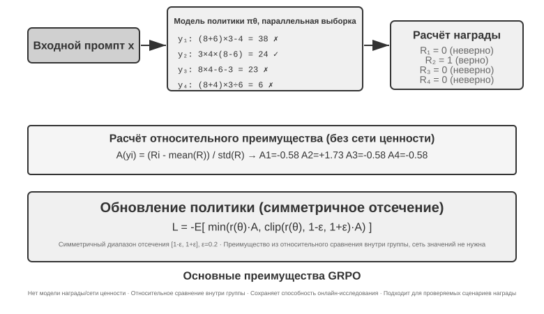
RL-сценарии современных LLM-агентов принципиально отличаются от традиционного RL — агенту нужно понимать намерение пользователя в многораундовом диалоге, вызывать инструменты, генерировать структурированный вывод и вести длинные цепочки рассуждений. Такое многоцелевое, многоэтапное принятие решений делает «правильный выбор алгоритма» в некоторой степени значимым, но это влияние далеко не так велико, как влияние данных и среды.
С точки зрения пути реализации алгоритмы RL делятся на методы онлайн-исследования (исследование новых политик через взаимодействие со средой) и методы офлайн-оптимизации (оптимизация на основе уже имеющихся данных, более стабильная и прямая). Заодно введём пару строгих терминов, обещанных ранее: методы на политике (On-Policy) обновляют себя, используя только данные, только что сэмплированные текущей политикой; методы вне политики (Off-Policy) могут учиться на данных, порождённых другой политикой (или её более старой версией) (как в упомянутом ранее Q-обучении). Согласуя с этим критерием обсуждавшиеся в главе методы: SFT — это офлайн-имитационное обучение, где данные приходят от учителя или человеческой демонстрации, а не от самой модели; стандартная форма PPO и GRPO для обучения LLM — на политике: на каждом раунде обновление делается на основе rollout, только что сэмплированного текущей моделью (т. е. модель полностью проходит задачу и генерирует целую траекторию от начала до конца); DPO же — это офлайн-оптимизация предпочтений, которая не выполняет ни онлайн-сэмплирования, ни итерации политики в строгом смысле.
Большинство этих алгоритмов строятся на одной и той же идее — градиенте политики (Policy Gradient): корректировать параметры политики \(\theta\) в направлении, «повышающем ожидаемую отдачу». Базовая форма (REINFORCE):
где \(\pi_\theta(a\mid s)\) — политика (вероятность выбора действия \(a\) в состоянии \(s\)), \(G\) — суммарная отдача этой траектории (или отдача от данного шага и далее): чем выше отдача, тем сильнее усиливается вероятность порождения этого действия. Использовать отдачу всей траектории \(G\) напрямую в качестве веса — несмещённо, но приводит к большой дисперсии; поэтому вводят базовую линию \(b\) и вместо неё используют в качестве веса преимущество (Advantage) \(\hat{A}=G-b\) (насколько это действие лучше среднего уровня), чтобы снизить дисперсию. Рассматриваемые далее PPO и GRPO по сути представляют собой два типа улучшений именно в том, «как стабильно оценивать и использовать преимущество \(\hat{A}\)».
PPO ограничивает величину каждого обновления с помощью «отсечения» (clipping), чтобы политика не «улетала» за один шаг:
где \(\rho\) — отношение вероятностей новой и старой политики, а \(\epsilon\) (например, 0,2) задаёт границу допустимого изменения за один шаг; упоминаемый далее «Clip-Higher» как раз ослабляет верхнюю границу \(1+\epsilon\).
GRPO отказывается от сети ценности (value network — вспомогательной нейросети, которую в PPO дополнительно обучают, чтобы отдельно оценивать функцию ценности для каждого шага траектории и тем самым получать более точное преимущество), заменяя её «относительным сравнением внутри группы» для оценки преимущества: для одной и той же задачи сэмплируется \(N\) траекторий, дающих отдачи \(r_1,\dots,r_N\), и преимущество каждой определяется как её относительная позиция внутри группы:
то есть «если лучше среднего по группе — плюс, если хуже — минус», и сеть ценности не нужна — именно поэтому этот метод дешевле. Стоит отметить: в приведённой формуле опущен член KL-регуляризации, а на практике обычно добавляют ещё и штраф KL по токенам, описанный в предыдущем разделе, чтобы удерживать политику вблизи референсной модели.
В табл. 7-4 обобщены ключевые характеристики основных методов. При чтении важно различать две вещи, которые часто смешивают: откуда берётся награда (верификатор на правилах, обученная модель награды или данные о предпочтениях человека) и каким алгоритмом ведётся оптимизация. PPO и GRPO не привередливы к источнику награды — они одинаково хорошо работают как с верификатором на правилах (RLVR), так и с моделью награды (RLHF); их реальное различие — в способе оценки преимущества (сеть ценности против относительной базовой линии внутри группы).
Табл. 7-4. Сравнение методов оптимизации на этапах постобучения и вывода
| Метод | Тип | Основная идея | Преимущества | Недостатки | Область применения |
|---|---|---|---|---|---|
| REINFORCE | Онлайн-алгоритм RL | Обновление политики по итоговой награде всей траектории | Простая реализация | Большая дисперсия, нестабильное обучение | Теоретический ориентир; исходная форма редко используется напрямую, но её варианты с базовой линией (RLOO, REINFORCE++ и т. д.) — один из основных подходов сегодня; GRPO по сути — REINFORCE с групповой базовой линией |
| PPO | Онлайн-алгоритм RL | Ограничение величины каждого обновления, чтобы политика не «уходила в сторону» | Стабильность, сеть ценности даёт более точное распределение вклада | Требует дополнительного обучения и хранения сети ценности, чувствительность к гиперпараметрам | Многораундовые агенты, распределение вклада в длинных траекториях |
| GRPO | Онлайн-алгоритм RL | Сэмплирование нескольких траекторий для одной задачи, относительное сравнение «которая лучше» внутри группы | Не требует сети ценности, дешевле | Преимущество распределяется по всему ответу равномерно, распределение вклада грубое; зависит от различимости наград внутри группы | Однораундовые/короткие траектории, сценарии с хорошей различимостью наград |
| DPO | Офлайн-оптимизация предпочтений | Превращение пар предпочтений напрямую в классификационную функцию потерь с неявной наградой | Крайне просто и эффективно, не требует онлайн-сэмплирования | Не может исследовать новые политики, ограничена качеством и охватом офлайн-данных о предпочтениях | Сценарии с уже готовыми качественными данными о предпочтениях |
| KTO | Офлайн-оптимизация предпочтений | Достаточно навесить метку «хорошо/плохо» на отдельный образец | Крайне низкая стоимость разметки | Грубый сигнал | Сценарии с крайне ограниченными ресурсами разметки |
| Best-of-N | Метод времени вывода | Генерация N вариантов вывода при инференсе, выбор лучшего | Не меняет модель, просто в реализации | Затраты на инференс растут пропорционально, способности не закрепляются в параметрах | Быстрое повышение качества на раннем этапе, оценка верхней границы выигрыша для RL |
Возвращаясь к экспериментам главы — честно укажем использованные алгоритмы: GeneralPoints и V-IRL (эксперименты 7-11, 7-12) взяты из одного исследования и используют PPO с сетью ценности; AdaptThink (эксперимент 7-10) использует собственную цель ограниченной оптимизации с сэмплированием по значимости; далее ReTool (эксперимент 7-15) использует PPO на базе модифицированного veRL (обучающие данные взяты из DAPO-Math-17k, но алгоритм оптимизации по-прежнему PPO), а SimpleVLA (эксперимент 7-13) и RLVP (эксперимент 7-14) построены на GRPO. В многораундовых сценариях проблема распределения вклада сложнее, и у разных алгоритмов свои плюсы и минусы.
Практический путь выбора: есть надёжный сигнал награды и вычислительные ресурсы → GRPO (проще) или PPO (гибче, более тонкое распределение вклада в длинных траекториях); есть качественные данные о предпочтениях → DPO/KTO (дёшево); ранний этап исследования → Best-of-N для быстрого старта.
Прочитав эту таблицу, вы можете подумать: «так какой же алгоритм мне выбрать и настраивать?» Ответ может удивить: в большинстве случаев подойдёт любой — не стоит зацикливаться на алгоритме. Следующий раздел посвящён именно этому.
Данные и среда: важнее алгоритма¶
Это раздел, который мне больше всего хочется, чтобы вы запомнили из всей главы — прямое изложение второй сквозной мысли главы. Мы потратили немало страниц на алгоритмы, но опыт промышленной практики говорит обратное: важность алгоритма несравнимо меньше трёх более базовых факторов — достоверности симуляционной среды, качества обучающих данных и возможностей базовой модели. С готовым алгоритмом достаточно уметь работать; истинную разницу создают качество среды и данных. Это перекликается с выводом шестой главы (оценка и симуляционная среда — фундамент постобучения), а также с упомянутым в разделе 7.2 переворотом в восприятии OpenAI — десятилетия исследований RL расставляли приоритеты неверно, а на самом деле реальный порядок таков: сначала базовая модель (prior) > среда > алгоритм.
Среда: площадка для тренировки модели¶
Суть RL — «обучение методом проб и ошибок», а для проб и ошибок нужна площадка — это и есть симуляционная среда (simulation environment). Модель раз за разом проходит задачу в этой среде, получает обратную связь и корректирует политику. Достоверность среды (насколько она похожа на реальный сценарий развёртывания) напрямую определяет, будет ли обученная политика пригодна к использованию:
- Если среда искажена — политика обречена. Если в симуляции служба поддержки всегда отвечает по фиксированному шаблону, а сообщения об ошибках не соответствуют производственной среде, модель выучит «стратегию для сдачи экзамена», работающую только внутри симуляции, и провалится сразу после запуска. Это самый распространённый способ провала RL-проекта — дело не в том, что алгоритм плох, а в том, что тренировочная площадка не совпадает с реальным «экзаменом».
- Построение достоверной среды часто дороже и сложнее самого обучения. Среда, способная к масштабному параллелизму, воспроизводимости и реалистичной обратной связи, обычно требует куда больших инженерных усилий, чем настройка модели. Эксперименты с вызовом инструментов далее в главе (песочница MCP в AWorld, песочница интерпретатора кода в ReTool) потребовали больших усилий по построению среды именно потому, что у реальных API есть ограничения по скорости, риск блокировки аккаунта и побочные эффекты — их совершенно нельзя использовать напрямую для обучения; сначала нужно построить стабильный, управляемый и воспроизводимый «теневой мир».
- Вторая половина среды — функция награды. Среда должна не только моделировать «как меняется мир», но и уметь определять, «хорошо ли сделано» — отсюда и берётся сигнал награды. Проектирование награды — часть инженерии среды, ему будет посвящён следующий раздел.
Одним предложением: прежде чем браться за настройку алгоритма, спросите себя — действительно ли моя симуляционная среда похожа на реальный мир? Ответ на этот вопрос значит намного больше, чем выбор между PPO и GRPO.
Что делать, если среду не построить: пусть модель играет роль среды¶
Но есть и более фундаментальная проблема: во многих сценариях высокодостоверная среда не «дорогая», а принципиально невозможна — у реальных API есть побочные эффекты, и их нельзя вызывать как попало, на реальных пользователях нельзя ставить пробные эксперименты, а физический мир и вовсе нельзя «перемотать вперёд». Если невозможно построить даже пригодный «теневой мир», значит ли это, что RL неосуществим? Всё более мейнстримной становится такая идея: смоделировать среду с помощью модели — поручить LLM играть роль среды и генерировать обратную связь, необходимую Agent для взаимодействия. У этого направления есть два уровня.
Первый уровень: модель синтезирует возвращаемые значения вызовов инструментов. Возьмём ZeroSearch (2025)11: обучение «умеющей искать модели» обычно не обходится без реального поискового движка, а у поисковых API есть стоимость и ограничения по частоте запросов, да и возвращаемые результаты не поддаются контролю. ZeroSearch просто поручает LLM играть роль поискового движка: модель-ученик отправляет поисковый запрос, а этот «симулированный движок» генерирует и возвращает результаты выдачи. Ещё изящнее то, что использован куррикулумный дизайн — на раннем этапе обучения симулированный движок возвращает высококачественные, строго релевантные документы, а по мере продвижения обучения постепенно подмешивается шум и качество выдачи снижается, вынуждая ученика научиться извлекать полезную информацию из несовершенной выдачи, как у реального поискового движка. В итоге модель, ни разу за всё обучение не видевшая реального поискового движка, при прямом подключении к реальному поиску по-прежнему показывает хорошие результаты.
Второй уровень: модель симулирует динамику всей среды. Модели можно поручить не только возвращаемые значения отдельных инструментов, но и «во что превратится мир после выполнения действия». DreamGym (2025)12 дистиллирует динамику среды в рассуждающую «модель опыта»: по текущему состоянию и действию Agent она шаг за шагом выводит переход состояния и сигнал обратной связи, что позволяет пакетно синтезировать rollout для онлайн-RL, вообще не обращаясь к реальной среде. При обучении Agent для клиентской поддержки и продаж повсеместно используется LLM в роли пользователя (симулятор пользователя) — именно на этой идее построена серия бенчмарков τ-bench: один и тот же симулятор на основе модели может служить и «экзаменационным залом», и «тренировочной площадкой».
Но необходимо указать на риски этого пути: знания о мире, заложенные в симуляторе, — это потолок обучения, а систематические смещения симулятора политика впитает в полном объёме. Если симулированный клиент терпеливее реальных пользователей, а симулированный поисковик никогда не возвращает мусор, ученик выучит стратегию, работающую только в «мире, сыгранном моделью»; хуже того, RL будет активно искать и эксплуатировать лазейки симулятора, занимаясь reward hacking. Поэтому надёжное инженерное решение — смешанный подход: основной объём взаимодействий берёт на себя модельная симуляция, дополненная взаимодействиями с реальной средой, а реальные взаимодействия регулярно используются для калибровки смещений симулятора.
Данные: самый важный элемент, и качество важнее всего¶
Если среда — это площадка, то данные — это учебник, и это самый важный из трёх элементов. Под «данными» здесь на этапе SFT понимаются образцы демонстраций (пары вход—выход), а на этапе RL — распределение задач и сигнал награды. На любом этапе действует железное правило:
Качество данных важнее алгоритма. Каким бы изящным ни был алгоритм, если на вход подаются грязные, неполные по охвату или систематически смещённые данные, на выходе получится только грязная политика. SFT дословно закрепит в параметрах модели шум и предвзятости из данных; RL же будет упорно оптимизировать в сторону смещённой награды, всё дальше уходя в неверном направлении (это благодатная почва для reward hacking). Garbage in, garbage out проявляется в постобучении в полной мере.
Более того, есть суждение, до которого многие команды не додумываются, хотя оно позволяет сэкономить огромные средства:
Во многих сценариях, если качество данных SFT на должном уровне, RL вам вообще не нужен. RL дорог и нестабилен (часто в десятки-сотни раз дороже SFT), но команды нередко сразу же берутся именно за него. Однако если распределение ваших задач предсказуемо и можно получить достаточно разнообразные и качественные демонстрационные данные, крепкий SFT часто справляется без остатка. Сценарии, где RL действительно незаменим, ограничены (см. раздел 7.5): системный дрейф распределения при развёртывании, экспертные демонстрации сами по себе не оптимальны, или стоимость разметки настолько высока, что демонстрацию невозможно предоставить для каждого пути. Сначала доведите данные для SFT до ума, а уже потом решайте, нужен ли RL вообще — такая последовательность позволяет сэкономить массу вычислений и времени.
Убедительный отраслевой пример — Anthropic. До 2025 года их рецепт постобучения состоял в основном из двух частей: SFT на огромном массиве высококачественных данных плюс RLAIF (обучение с подкреплением на основе обратной связи от ИИ из Constitutional AI, Bai и др., 2022 г. — модель сама оценивает свои ответы, руководствуясь «конституцией», для выравнивания), — при этом они не особо полагались на RLVR (обучение с подкреплением на проверяемых наградах), которое сегодня стало стандартом для кода и рассуждений. Тем не менее качество их модели для кодинга в то время уже было очень высоким. Причина в значительной степени не в алгоритме, а в том, что качество данных для обеих частей — SFT и RLAIF — было доведено до предела, — и это как раз подтверждает вышеприведённое суждение: когда данных SFT достаточно, довольно незамысловатый рецепт способен обучить модель топ-уровня, и сложный RL с проверяемыми наградами не всегда обязателен. Разумеется, это не значит, что RL бесполезен: начиная с 2025 года Anthropic заметно нарастили инвестиции в RL — на прочном фундаменте из хороших данных RL способен ещё немного поднять потолок возможностей. Данные определяют, куда вы можете дойти, а RL — насколько ещё выше вы можете подняться.
Что конкретно означает качество данных? Как минимум три измерения: охват (охвачены ли все ситуации, встречающиеся при развёртывании, особенно длинный хвост и граничные случаи), разнообразие (достаточно ли богаты демонстрации по говорящим, стилю, способам решения — иначе модель схлопнется в единый шаблон, как в эксперименте 7-6, где «все говорят одним голосом») и точность разметки (правильны ли сами демонстрационные ответы, особенно при дистилляции цепочки рассуждений — ошибочный ход мысли ученик усвоит вместе с ответом, поэтому в эксперименте 7-9 сначала использовался верификатор на правилах, чтобы отфильтровать траектории с неверными ответами). Отдача от вложений в эти три пункта обычно намного выше, чем от смены на более замысловатый алгоритм.
На практике стандартный способ максимально повысить точность разметки — выборочное отбрасывание: для каждого Prompt сгенерировать k кандидатов (обычно от 4 до 16), проверить их правилом, модульными тестами или эталонным ответом, оставить только прошедшие траектории, удалить дубликаты и ограничить число примеров на один Prompt, а затем выполнить раунд SFT. После усиления модели выборку и фильтрацию можно повторить. Это превращает принцип «качество данных важнее алгоритма» в исполняемый конвейер, которому нужны надёжный верификатор и достаточный бюджет выборки, но не новый алгоритм.
Выборочное отбрасывание в основном фильтрует ответы на заданные вопросы. Следующий шаг — позволить Agent изменять само распределение задач. В Agentic Self-Instruct системы Autodata главный Agent координирует четыре роли: challenger создаёт задачи, слабый и сильный решатели пытаются их выполнить, а verifier оценивает качество ответов и возвращает выводы в контур генерации задач. Система ищет примеры, которые сильная модель решает, слабая — ещё нет, а оценщик способен надёжно проверить, превращая вычисления на инференсе в новые обучающие данные на текущей границе способностей10.
Это отличается от динамической выборки из существующего банка: динамическая выборка меняет распределение бюджета, а agentic data generation — распределение самих задач. При этом термин «самоулучшение» следует использовать осторожно. Если цикл обучает только слабого решателя, а сильный решатель и механизм постановки задач остаются неизменными, это скорее адаптивная дистилляция. Более полный метацикл возникает лишь тогда, когда создающий задачи Agent тоже оптимизируется по результатам последующего обучения. Autodata исследует такую возможность через метаоптимизацию Agent-специалиста по данным, но пока это передовое исследовательское направление, а не зрелый универсальный рецепт.
В девятой главе эта же мысль прозвучит снова: колебания модели распознавания речи в вопросе «стоит ли уже принимать реплику» коренятся не в архитектуре модели, а в том, что обучающие метки размечены с «взгляда бога» — стоит изменить метки так, чтобы использовалась только информация, доступная в момент принятия решения, и проблема исчезает. Часто данные важнее архитектуры.
А когда же дело доходит до алгоритма?¶
Речь не о том, что алгоритм совсем не важен — просто его место дальше по порядку. Разумная последовательность усилий такова: сначала выбрать сильную базовую модель → затем довести до ума среду и данные → и только в конце заниматься маргинальной оптимизацией алгоритма и гиперпараметров. Когда ваша среда достаточно достоверна, данные достаточно хороши, а базовая модель достаточно сильна, разница между алгоритмами наконец становится заметной — и вот тогда вопросы вроде «GRPO или PPO, нужен ли Clip-Higher» стоит всерьёз обдумывать. И наоборот: заниматься доводкой алгоритма, не наладив среду и данные, — типичная ситуация «не туда прикладываем усилия». Держа в уме этот порядок приоритетов, перейдём к многораундовым задачам — там проектирование награды (место, где пересекаются данные и среда) станет решающим фактором успеха.
От одного раунда к многим: распределение вклада и проектирование награды¶
Ключевая сложность многораундовых задач¶
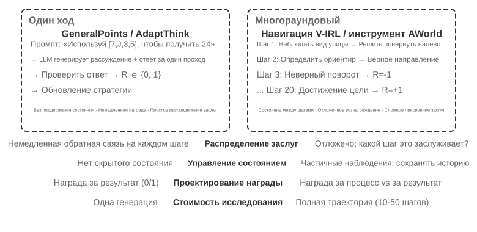
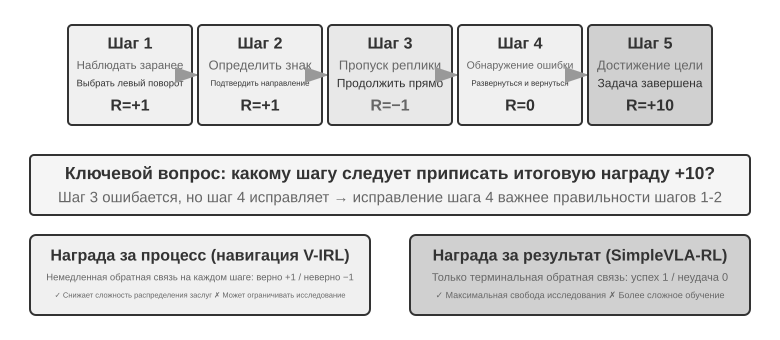
Переход от одного раунда к многим означает качественный скачок сложности. Политике нужно не только выбирать оптимальное действие сейчас, но и учитывать ценность будущих состояний; не только обрабатывать немедленную обратную связь, но и осуществлять при отложенной награде распределение вклада (Credit Assignment) — определять, какой из шагов в многошаговой последовательности внёс наибольший вклад в итоговый результат. Например, агент службы поддержки решил проблему пользователя за 10 раундов диалога и в итоге получил положительный отзыв — но кому приписать заслугу: точному вопросу на втором раунде или терпеливому объяснению на седьмом? Многораундовость привносит ещё одну трудность: частичную наблюдаемость (агент не имеет доступа к полному состоянию и вынужден строить неявное представление состояния на основе истории наблюдений).
Обсуждаемое здесь многораундовое взаимодействие по своей физической форме — это именно цикл ReAct, описанный в первой и четвёртой главах: каждый раунд представляет собой одну итерацию мысль → действие → наблюдение, а задержка награды возникает как раз из структурного ограничения «оценить успешность итогового результата можно только после множества раундов».
Плотность и парадигма сигналов вознаграждения¶
Дизайн вознаграждения, обсуждаемый в этом разделе, применим и к одношаговым задачам; он вынесен в раздел про многошаговые задачи потому, что сложность распределения кредита в многошаговых сценариях превращает вопрос «как часто давать обратную связь и в какой форме» из опции в решающий фактор успеха. У сигнала вознаграждения есть два измерения дизайна: плотность (как часто даётся обратная связь — бинарная/разреженная/процессная награда) и форма представления (как выглядит обратная связь — скаляр/вектор/генеративный текст).
Прежде чем переходить к обсуждению многошагового вознаграждения, систематически разберём пространство дизайна сигналов вознаграждения. Это и центральный вопрос обучения RL, и тема, тесно связанная с автоматизированной оценкой, обсуждавшейся в шестой главе — тщательно спроектированная среда оценки часто может быть переделана в качественную обучающую среду. Но нужно различать две вещи: «среду оценки можно переиспользовать» не значит «эти конкретные данные оценки можно напрямую брать для обучения».
Рассмотрим три примера. SWE-bench — типичный случай такой переделки: именно на его основе построен обучаемый набор задач SWE-Gym (описание проблемы как вход, patch как обучающий сигнал, тестовые случаи дают вознаграждение) — но для обучения используется заново построенный набор задач, а отобранное вручную командой OpenAI подмножество SWE-Bench Verified из 500 задач для оценки должно быть строго изолировано от обучающих данных: стоит ему попасть в обучающую выборку, и оценка теряет смысл (это как раз то напряжение, которое обсуждается в вопросе 10 этой главы). Полные записи траекторий τ²-bench (история диалога, вызовы инструментов, изменения состояния) дают ценные данные для имитационного обучения — успешные траектории идут как положительные примеры, неудачные, после разметки, — как отрицательные. Параметризованные шаблоны AndroidWorld позволяют массово генерировать бесчисленные вариации, что естественно поддерживает curriculum learning — от простых одношаговых операций постепенно к сложным межприложенческим процессам.
Эти примеры указывают на один вывод: качество сигнала вознаграждения, который даёт среда оценки, напрямую определяет эффективность обучения RL — при условии, что данные для обучения отделены от данных для оценки.
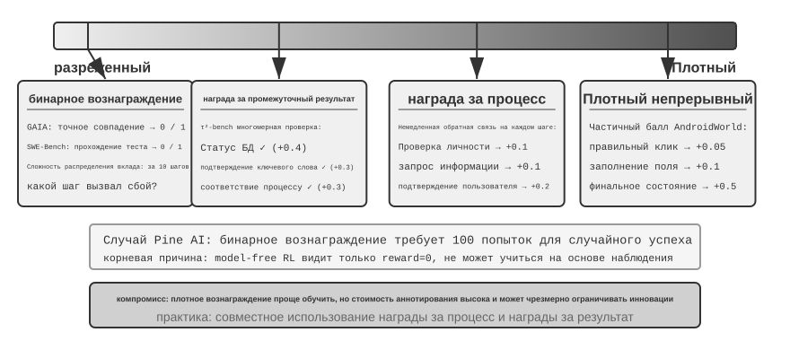
Где уместна бинарная награда.
Для многих задач простейшая бинарная награда (успех = 1, неудача = 0) уже вполне достаточна. Например, «ответить на математическую задачу» — ответ либо верен, либо нет, серой зоны нет; или «выполнить SQL-запрос» — результат либо совпадает с ожидаемым, либо нет. Для таких задач с чётко определённым правильным ответом бинарная награда одновременно проста и надёжна, более сложный дизайн не нужен.
Проблема возникает в открытых задачах без явно правильного ответа.
Тупик разреженной награды.
Возьмём сценарий, в котором Pine AI звонит по телефону, чтобы что-то оформить. Обучаем агента бинарной наградой (binary reward, успех = 1, неудача = 0) помочь пользователю связаться с Xfinity и изменить тарифный план: в первый раз забыли собрать номер аккаунта, неудача, reward = 0; во второй раз забыли последние четыре цифры кредитной карты, неудача, reward = 0; в третий раз упустили адрес для выставления счёта, неудача, reward = 0... успех наступает случайно только после 100 попыток.
Корень проблемы, как указывают Сильвер и Саттон в «Welcome to the Era of Experience»6: нынешние методы RL умеют учиться только по итоговому результату успех/неудача, но не способны учиться на богатой обратной связи, которую даёт среда. Оператор поддержки явно сказал «нужны последние четыре цифры карты», человек это услышал один раз и запомнил, а RL видит только итог «неудача» и не знает, почему она случилась. Хуже того: если из 10 шагов процесса первые 9 были безупречны и ошибка допущена только на 10-м, полученный сигнал — всё равно «вся задача провалена», без указания, на каком именно шаге проблема. Обсуждаемые далее в этой главе передовые методы — On-Policy Distillation и штраф за верифицированные пути (RLVP) — как раз призваны смягчить эту проблему.
Процессная награда (Process Reward), напротив, даёт немедленную обратную связь по каждому ключевому шагу выполнения, превращая оценку из чёрного ящика в белый. Например, при генерации кода можно отдельно оценивать понимание требований, поиск кода, проектирование решения, написание кода, запуск тестов; в сценарии поддержки клиентов можно проверять корректность каждого шага — верификацию личности, запрос информации, подтверждение, оплату. Но процессная награда сталкивается с высокой стоимостью разметки и риском чрезмерно ограничить простор для инноваций, поэтому на практике её сочетают с наградой за итоговый результат.
Эволюция парадигм вознаграждения.
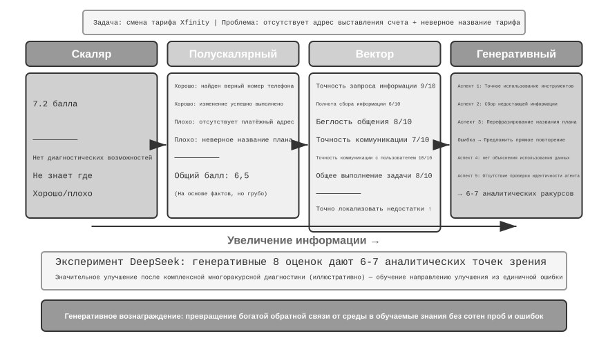
Исследование DeepSeek (Liu et al., 2025) систематически анализирует различия в обучающем сигнале разных парадигм вознаграждения на непрерывном спектре скаляр — полускаляр — генеративный; в дополнение к этому здесь мы вводим ещё одно измерение — векторную (многомерную) оценку. Чтобы наглядно понять различие парадигм, продолжим тот же сценарий: Pine AI звонит и оформляет тарифный план Xfinity. На этот раз агент справился с задачей, но с изъянами — упустил необходимость дополнить адрес для выставления счёта и ошибочно указал название плана, назвав Performance Pro вместо Performance Plus (все приведённые ниже оценки условны):
Скалярная парадигма: выставляется оценка 7,2 — никакой диагностической информации, непонятно, что сделано хорошо, а что плохо. Полускалярная парадигма: сначала анализируются плюсы и минусы, затем выставляется оценка 6,5 — есть обоснование, но информации всё ещё немного. Векторная парадигма (дополнительное измерение, введённое в этой книге): оценки по нескольким измерениям отдельно — точность запроса информации 9/10, полнота сбора информации 6/10, плавность коммуникации 8/10, точность коммуникации 7/10, точность коммуникации с пользователем 10/10, общая степень выполнения задачи 8/10. Это похоже на результаты медосмотра — можно точно локализовать проблему («сбор информации» получил только 6 баллов, значит, стоит в первую очередь доработать промпт для этапа сбора данных).
Генеративная парадигма: развёрнутое описание на естественном языке, с поддержкой многократной выборки для анализа с разных ракурсов — условно говоря, для одного и того же выполнения можно провести несколько оценочных выборок и получить аналитические ракурсы, охватывающие разные стороны, а объединив эти диагностики для доработки, можно получить намного больше пользы, чем от одного числа. Реальный вывод статьи DeepSeek таков: генеративная модель вознаграждения способна непрерывно улучшать качество оценки за счёт масштабирования на этапе вывода (многократная выборка оценок с последующим агрегированием), превосходя на нескольких бенчмарках моделей вознаграждения скалярные подходы, полагающиеся только на увеличение размера модели. Основная ценность генеративного вознаграждения — в превращении богатой обратной связи среды в знание, пригодное для обучения, что позволяет агенту извлечь урок из одной-единственной неудачи, вместо того чтобы совершать сотни слепых попыток.
С точки зрения RLHF генеративную модель вознаграждения можно рассматривать как эволюцию упомянутой ранее дискриминативной модели вознаграждения по Брэдли-Терри: дискриминативная RM выдаёт лишь скалярную оценку (кто выше, кто ниже), тогда как генеративная RM формирует развёрнутую оценку на естественном языке с рассуждением, объясняя, «почему хорошо, почему плохо». Это делает её изначально более прозрачной и легче расширяемой на открытые задачи, которые трудно охватить правилами и скалярными оценками.
Выбор конкретной функции вознаграждения зависит от способа проверки задачи. Если ответ можно автоматически проверить кодом (например, математическая задача, юнит-тест), проще и надёжнее всего бинарная награда; если у задачи несколько независимых измерений качества (например, в сценарии поддержки клиентов — точность информации, вежливость общения, степень решения проблемы), уместна векторная оценка по измерениям; если задача сильно открытая и трудно поддаётся разбиению на измерения (например, творческое письмо, сложный диалог), уместна генеративная награда, дающая качественный анализ от оценивающей модели.
Обучение генеративной модели вознаграждения.
Как обучить генеративную модель вознаграждения? Традиционный подход требует, чтобы человеческие эксперты оценили большое число случаев, а модель затем им подражала, что дорого стоит, а людям к тому же часто трудно объяснить, почему A лучше B. Метод DeepSeek позволяет модели самостоятельно освоить навык оценки в три шага.
Первый шаг: модель автоматически генерирует критерии оценки для конкретной задачи. Например, оценивая «помочь пользователю позвонить и оформить изменение тарифного плана Xfinity», модель формулирует: «Хороший агент должен: 1) найти правильный официальный канал поддержки; 2) собрать всю необходимую информацию для верификации личности; 3) точно передать по телефону запрос пользователя; 4) избегать выдумывания или искажения информации; 5) своевременно реагировать на запросы оператора».
Второй шаг: оценка процесса выполнения по каждому критерию отдельно. Продолжая пример: нашли правильный телефон? Да, 1-800-XFINITY — официальная поддержка. Вся информация собрана? Нет, упущен адрес для выставления счёта. Передача была точной? Есть одна ошибка — неверно названо название тарифного плана.
Третий шаг: система автоматически проверяет точность оценки. Например, если модель заявила «название тарифа передано точно», а фактическая траектория показывает, что название названо неверно, система выдаёт отрицательную обратную связь; если модель верно распознала упущенный адрес для выставления счёта, выдаётся положительная обратная связь. За счёт многократной тренировки на тысячах случаев модель постепенно учится формулировать разумные критерии для разных задач и давать точные диагнозы.
У этого подхода есть несколько ключевых преимуществ: сильная обобщающая способность (модель осваивает мета-способность «формулировать стандарт, проводить оценку», а не фиксированный лист оценок); прозрачность процесса оценки, удобство выявления предвзятости (например, если выясняется, что модель всегда считает «длинный ответ» плюсом, становится понятно, что она ошибочно приняла длину за качество); поддержка совместной эволюции модели вознаграждения и модели политики, а не фиксированной раз и навсегда модели вознаграждения, как в традиционном подходе.
Процессная награда против награды за итог: ключевой выбор для многошаговых задач¶
Помимо распределения кредита и частичной наблюдаемости, многошаговые задачи сталкиваются с проблемой дальних зависимостей — влияние ранних решений, таких как постановка подцели или выбор инструмента, может проявиться лишь через десятки шагов. Из-за этого дизайн вознаграждения оказывается перед ключевым выбором: процессная награда даёт обратную связь на каждом шаге, снижая сложность распределения кредита, но вносит предвзятость ручного проектирования и может ограничивать пространство исследования; награда за итог даёт обратную связь только в конце, обеспечивая максимальную свободу исследования, но при этом обучение сложнее и требует больше выборок. Образно говоря, процессная награда похожа на учителя, проверяющего домашнее задание построчно — ученик быстро узнаёт, где ошибся; награда за итог похожа на итоговую оценку на экзамене — у ученика больше свободы искать собственные методы обучения, но обратная связь приходит очень поздно. Дизайн функции вознаграждения тесно связан с построением сред оценки, обсуждавшимся в шестой главе — качественная автоматизированная среда оценки является предпосылкой для обучения RL.
Терминологически этим двум типам наград соответствуют два класса моделей вознаграждения: процессная модель вознаграждения (Process Reward Model, PRM) оценивает каждый промежуточный шаг рассуждения или выполнения — характерная работа здесь это «Let's Verify Step by Step» от OpenAI5, где на задачах математического рассуждения PRM, обученная на пошаговой разметке человеком, заметно превосходит модель, обученную только на итоговом ответе; модель вознаграждения за результат (Outcome Reward Model, ORM) оценивает только итог. Упомянутый ранее верификатор по правилам в RLVR можно рассматривать как частный случай ORM — с заменой «выученной модели оценки» на детерминированное правило.
Распределение кредита на практике. На инженерном уровне распределение кредита обеспечивается несколькими конкретными механизмами. Коэффициент дисконтирования \(\gamma\) в многошаговом RL для LLM обычно напрямую устанавливается равным 1: задача занимает всего несколько или несколько десятков шагов, цель оптимизации — итоговый успех как таковой, и нет смысла дисконтировать награду за «более раннее достижение успеха». PPO опирается на GAE (Generalized Advantage Estimation, обобщённую оценку преимущества): интуиция в том, что сеть ценности оценивает для каждого шага траектории, «насколько этот шаг лучше ожидаемого», балансируя между смещением и дисперсией. GRPO же уходит в другую крайность: он рассматривает весь response как единое действие, а значение преимущества уровня траектории равномерно распределяется по всем токенам — точный вопрос на 2-м шаге и бесполезная реплика на 7-м получают абсолютно одинаковый кредит. Такое грубое распределение кредита не создаёт серьёзной проблемы в коротких одношаговых задачах, но в длинных многошаговых задачах размывает обучающий сигнал — именно поэтому PPO с сетью ценности сохраняет свою ценность в многошаговых сценариях. Промежуточный вариант — распределение на уровне «хода» (turn-level): преимущество вычисляется в единицах «хода» (например, с использованием обратной связи среды или процессной награды после каждого хода), что дешевле распределения по токенам и точнее распределения по всей траектории, и является распространённым компромиссом в современных фреймворках RL для многошаговых агентов.
Эксперимент 7-12 ★★★: V-IRL-VL пространственное мышление — процессная награда
V-IRL (Yang и др., 2024; настоящий эксперимент продолжает исследование Chu и др. 2025, упомянутое выше, алгоритм RL тот же — PPO с сетью ценности) — это среда навигации в открытом мире по видимым уличным сценам, использующая реальные виды городских улиц. V-IRL-L использует чисто текстовое описание, V-IRL-VL предоставляет сетку изображений улицы 2×2 (спереди, сзади, слева, справа). Для обучения использовано 1000 маршрутов Нью-Йорка, для тестирования — 18 маршрутов из официального benchmark V-IRL по девяти городам, включая Милан, Нью-Дели, Лондон, Гонконг — с огромными различиями в архитектурном стиле, планировке улиц и условиях освещения.
Вариант правил: обучение с абсолютными направлениями (north/east), тест — с относительными (left/right). Визуальный вариант: тестирование в разных городах.
Результаты снова подтверждают «SFT запоминает, RL обобщает». По правилам вне распределения (OOD): RL на V-IRL-L даёт +11,0%, SFT падает на 79,5%; на V-IRL-VL RL +9,3%, SFT падает на 33,2%. По визуальным OOD: RL на V-IRL-VL растёт с 16,7% до 77,8% (+61,1%) — сквозной RL с открытой моделью превзошёл сильную базовую линию на закрытой модели с тщательной инженерией промптов; SFT падает до 11,1% (-5,6%).
Процессная награда в этом эксперименте сыграла ключевую роль. В отличие от одношаговой задачи GeneralPoints, навигация требует обратной связи на каждом шаге: правильное действие +1, неправильное действие -1, ошибка распознавания ориентира дополнительно -1,5. Такая плотная обратная связь снижает сложность распределения кредита на длинных временных горизонтах — если агент ошибается на 5-м шаге, отрицательная обратная связь приходит немедленно, не нужно ждать 20-го шага и конца задачи, чтобы узнать об этом. В сочетании с механизмом проверки-повтора (verify_iter=2, разрешающим две попытки в одной точке принятия решения) это дополнительно повышает эффективность использования выборки и стабильность обучения.
Отслеживание связи точности визуального распознавания и общей производительности показало: RL оптимизирует не только «принятие решения при заданном результате распознавания», но и само «визуальное распознавание» — сигнал оптимизации, ориентированный на результат, обратно распространяется на уровень восприятия, побуждая визуальный кодировщик учиться представлениям признаков, релевантным задаче. SFT же склонен переобучаться на уровне рассуждения, игнорируя обучение на уровне восприятия, из-за чего малейшее изменение визуального облика приводит к сбою.
Синергия SFT и RL в многошаговых задачах проявляется ещё заметнее. Без инициализации через SFT RL не может эффективно обучаться (базовая модель не способна генерировать структурированный вывод в формате JSON). Но если SFT переобучена до серьёзного переобучения, RL так же не сможет восстановить производительность на данных вне распределения (OOD). Это тонкий баланс: SFT следует обучать лишь до «стабильного формата и базовых способностей», не более того.
Эксперимент 7-13 ★★★: SimpleVLA-RL — награда за результат
[расширенный эксперимент]Модель VLA (Vision-Language-Action) объединяет визуальное восприятие, понимание языка и генерацию действий — это новая парадигма в области манипулирования роботами. Она сталкивается с двумя главными сложностями: масштабирование SFT требует крупномасштабных траекторий ручного манипулирования (сбор которых крайне дорог, а разнообразие ограничено), а модели, обученные на ограниченном наборе сценариев, заметно теряют в производительности при столкновении с невиданными задачами, средами или объектами. Вдохновившись тем, как RL заметно усилил способность DeepSeek-R1 к пошаговому рассуждению, этот эксперимент исследует, способен ли RL аналогичным образом усилить способность VLA к пошаговой генерации действий. SimpleVLA-RL построена на veRL, использует только бинарную награду за результат (успех/неудача) и вводит три меры усиления исследования: динамическая выборка отфильтровывает группы с полным успехом/полной неудачей для обеспечения стабильного градиента; более высокая граница отсечения [0,8, 1,28] стимулирует исследование; более высокая температура 1,6 генерирует разнообразные траектории. Комбинация трёх мер даёт прирост примерно на 30% за 300 шагов.
На LIBERO (платформе для бенчмаркинга задач манипулирования роботами) заявлен высокий результат 97,6%. Эксперимент с холодным стартом: только 1 траектория SFT на задачу (17,3%), после добавления RL достигается 91,7% (+74,4 процентных пункта, относительный прирост около 430%) — весомое доказательство мощи RL в условиях дефицита данных.
В процессе обучения возникло «срезающее движение» (pushcut) — новый паттерн действий, самостоятельно открытый RL, никогда не встречавшийся в человеческих демонстрациях. Стандартная демонстрация идёт по пути «приблизиться → захватить → поднять вертикально → переместить горизонтально → опустить», а RL обнаружил более эффективный путь: «приблизиться → захватить → удерживать на низком уровне → толкнуть горизонтально → завершить», пропуская шаг подъёма, что быстрее и предъявляет меньше требований к точности позиционирования. Это убедительно доказывает, что RL способен превзойти имитационное обучение и открыть более удачные стратегии, о которых люди даже не задумывались.
Фреймворк использует алгоритм GRPO вместе со стратегией динамической выборки — для обучения сохраняются только задачи с умеренным уровнем успешности, что естественным образом формирует curriculum learning (от простого к сложному). Работа в реальном времени обеспечивается разбиением на блоки действий (action chunking): модель за один вывод генерирует несколько будущих шагов действий, поток управления исполняет их по очереди, а GPU в фоне асинхронно генерирует следующую партию — пока время вывода меньше времени исполнения, робот сохраняет непрерывное плавное движение (полное обсуждение разбиения на блоки действий — в главе 9, в разделе про слой управления VLA).
Улучшение обобщающей способности проявляется в нескольких измерениях: пространственное обобщение (политика, обученная на определённой планировке, переносится на другие конфигурации), обобщение по объектам (обработка невиданных форм и текстур объектов), обобщение по целям (адаптация к описаниям новых целевых задач).
Сравнение с V-IRL-VL показывает компромиссы двух подходов к дизайну вознаграждения: сигнал награды за результат более разрежён, но даёт модели больше свободы исследования (именно так было открыто «срезающее движение»); процессная награда за счёт плотной обратной связи ускоряет сходимость, но может ограничивать выход политики за пределы пространства демонстраций. Проще говоря: когда правильность промежуточных шагов легко определить, процессная награда эффективнее; когда оптимальный путь неизвестен, награда за результат обладает большим потенциалом.
Награждаем результат, ограничиваем процесс: верификационный штраф за путь (RLVP) и частичная награда¶
Награда за процесс и награда за результат решают проблему «насколько плотной должна быть обратная связь». Но есть ещё одна проблема, которую не решает ни один из рассмотренных ранее вариантов RL: награда за результат в принципе не может выразить требование «процесс должен соблюдать правила» — а ведь именно от этого зависит, можно ли выпускать реального агента в продакшн. Этот раздел разбирает вопрос до конца; метод взят из статьи о RLVP7 (Reinforcement Learning with Verified Penalty, обучение с подкреплением с верифицированным штрафом за путь), и всю рецептуру можно свести к одной фразе: награждай результат, штрафуй путь (reward the outcome, penalize the path).
Проблема: есть класс ограничений, которым награда за результат не только не научит, но и будет обратно стимулировать их нарушать. В реальности агенту, помимо «доведения дела до конца», нужно соблюдать ещё и ограничения, не связанные с результатом (outcome-neutral constraints) — их соблюдение никак не связано с тем, успешна задача или нет: не звонить повторно пользователю, который уже явно отказался брать трубку, не действовать самовольно в нерабочее время, не пропускать проверку личности, не выполнять деструктивные команды вроде rm -rf, не подгонять тесты под правку вместо исправления кода, не перезаписывать файл, который сам даже не читал. Проблема в том, что нарушение этих ограничений зачастую повышает «видимую» долю успеха — срезать путь быстрее: напрямую поправить файл теста, конечно, быстрее, чем реально исправить баг; пропустить проверку, конечно, быстрее, чем честно её выполнить. В итоге чистая награда за результат не просто не учит этим ограничениям — она активно стимулирует агента их нарушать. В статье агент, обученный только на награде за результат, нарушал правила почти в каждом эпизоде.
Ключевая идея: реальная среда — это «асимметричный верификатор». Это ключ к пониманию всего метода. В среде, где всё можно проверить машинно (терминал, кодовая база, доказыватель теорем), есть вещь, которую легко проверить — является ли конкретное действие плохим (был выполнен деструктивный вызов, звонок сделан при невыполненном предусловии), потому что у плохих действий есть чёткие, детерминированные признаки. А есть вещь, которую трудно проверить — движется ли агент к цели осмысленным образом (это почти так же сложно, как и решить задачу саму по себе). Раз «обнаружение плохого действия» дёшево и надёжно, а «оценка прогресса» дорога и подвержена ошибкам, то плотный сигнал, который среда способна надёжно выдавать, — это по сути «штраф за путь», а не «награда за прогресс». Эта асимметрия и определяет форму метода.
Решение: добавить к награде за результат ещё один канал — верифицируемый «сигнал пути». Итоговая награда записывается в виде двух частей:
O — исходная награда за результат (разреженная, по-прежнему настоящая цель); Φ — сигнал пути, который выдаётся по каждому действию отдельно детерминированным движком правил — это чисто функциональная оценка пары «действие + состояние до этого действия», а не обученная модель-судья. У Φ два способа применения — со знаком минус и со знаком плюс:
- Штраф (−λ): за каждое машинно определяемое нарушающее действие в траектории (деструктивная команда, правка файла теста) с соответствующего токена снимается λ баллов.
- Награда за соблюдение правил / частичная награда (+μ, Partial Credit): за каждое проверяемое хорошее действие — выполнено какое-то предусловие, достигнута подцель, выросло число пройденных тестов, уменьшилось число недоказанных целей — начисляется μ баллов.
Оба канала нормализуются отдельно и лишь затем объединяются — чтобы плотный сигнал пути не заглушал разреженный сигнал результата (и наоборот). Всё это подключается прямо к тренировочному циклу PPO/GRPO: метод не меняет алгоритм оптимизации, а лишь перестраивает награду на каждом шаге, так что при расчёте преимущества становятся видны правильные и неправильные действия внутри процесса.
Почему это работает — единое объяснение: внутригрупповая дисперсия (within-group variance). Вспомним раздел 7.8: GRPO не обучает сеть ценности, а вместо этого сэмплирует для одного и того же промпта группу (G штук) rollout-ов и использует относительную позицию каждого внутри группы как преимущество. Здесь есть математический факт: преимущество в GRPO по сути и есть внутригрупповая дисперсия — если все rollout-ы в группе получают абсолютно одинаковую награду, дисперсия равна нулю, преимущество каждого равно нулю, и вся группа не даёт никакого градиента — сэмплирование прошло впустую.
Когда используется только награда за результат, такой «тупик нулевой дисперсии» неизбежно возникает в двух случаях — и это как раз два самых частых сценария в начале и в конце обучения:
- Группа сплошных неудач (начало обучения): задача слишком сложна, вся группа rollout-ов проваливается, O везде равно 0 → внутригрупповая дисперсия равна нулю → нет градиента. В начале обучения таких групп подавляющее большинство, и огромное количество дорогостоящих сэмплов пропадает впустую.
- Группа сплошных успехов (конец обучения): задача почти освоена, вся группа rollout-ов успешна, O везде равно 1 → дисперсия снова нулевая → нет градиента.
Иначе говоря, чистая награда за результат «слепа» на обоих полюсах успешности. Раньше сообщество просто выбрасывало такие группы с нулевой дисперсией (динамическая выборка в DAPO именно так поступает с промптами, где все ответы либо целиком верны, либо целиком неверны). RLVP переформулировал вопрос: вместо того чтобы выбрасывать, спросим — какой плотный сигнал способен восполнить недостающую здесь дисперсию? Ответ сразу становится ясен:
- Верифицируемый штраф всегда способен восполнить дисперсию. Даже если вся группа rollout-ов провалилась, то, «насколько дисциплинированно они провалились», обычно у всех разное — кто-то выполнил деструктивную команду, кто-то нет. Как только добавляется штраф, внутри группы сплошных неудач сразу появляется различие (дисперсия), и градиент оживает. Поскольку плохое действие всегда дёшево проверить, штраф — это та половина решения, которая «всегда достижима».
- Верифицируемая награда за прогресс (Partial Credit) восполняет дисперсию только тогда, когда «прогресс достижим». Если в группе кто-то прошёл на два теста больше, а кто-то доказал ещё одну лемму, между ними возникает разница в прогрессе, и +μ создаёт дисперсию; но если задача слишком сложна и прогресс каждого rollout-а застревает на нуле (в починке ПО никто не может пройти ни один из скрытых тестов), сигнал прогресса везде равен нулю — и дисперсия по-прежнему нулевая, тут он не поможет. Поэтому награда за прогресс — это та половина решения, которая «обусловлена достижимостью» (reachability-gated): в доказательстве теорем последовательное «уменьшение числа недоказанных целей» достижимо — и потому полезно; в починке ПО «доля пройденных тестов» часто недостижима — и потому бесполезна.
Подытожим: плотный сигнал полезен только тогда, когда он способен восполнить ту внутригрупповую дисперсию, которой не хватает награде за результат: штраф выполняется всегда (плохое действие всегда можно проверить), награда за прогресс — только когда частичный успех достижим. Поэтому в статье штраф называют «универсально применимой половиной», а награду за прогресс — «условной половиной».
Применение первое: штраф за путь ради возможности выпустить агента в продакшн — четыре принципа проектирования. Использование Φ как штрафа для обучения агента соблюдать ограничения опирается на четыре принципа, проверенных абляциями, каждый из которых закрывает свою «дыру»:
- Штрафовать только за проверяемые «действия», ни в коем случае не за «отсутствие прогресса». Мишенью штрафа обязательно должно быть конкретное, машинно определяемое плохое действие (был выполнен
rm -rf, звонок сделан при невыполненном предусловии), а не «на этом шаге не было прогресса». Потому что «ничего не делать» — самый простой способ избежать «штрафа за отсутствие прогресса»; это напрямую научит агента бездействовать. - Награда за результат всегда остаётся главной движущей силой, штраф не может оптимизироваться самостоятельно. Здесь есть смертельно опасная ловушка бездействия (inaction trap): если есть только штраф и нет награды за результат, оптимальная политика — «ничего не делать»: ноль нарушений, но и ноль успехов. Абляция в статье показывает, что чистый штраф обрушивает успешность до нуля на каждом случайном сиде. Обязательно нужно, чтобы награда за результат создавала тягу «довести задачу до конца», а штраф отвечал только за «как это делать».
- Каждому штрафу (−λ) должна соответствовать своя награда за соблюдение правил (+μ). Нужно и снимать баллы за «правку файла теста», и награждать соответствующее корректное действие — «действительно исправить баг так, чтобы он естественным образом прошёл проверку», указывая агенту выход, а не только перегораживая путь. Абляция показывает: убрать эту парную награду за соблюдение правил — значит заметно замедлить и дестабилизировать формирование корректного поведения.
- Корректный путь должен быть достижим, а мишень штрафа не должна допускать лазеек. Небольшое количество сценарных демонстраций заранее показывает агенту, «как именно выглядит корректный путь» (иначе он может никогда не наткнуться на корректное действие в исследовании, и +μ никогда не будет применено); одновременно определение «что считается нарушением» обязательно должно опираться на конкретные детерминированные проверки, а не на обученную «оценивающую соответствие» модель-судью — иначе проблема лазеек просто переместится с политики на самого судью.
Применение второе: награда за достижимый прогресс ради эффективности использования данных (Partial Credit). Тот же +μ, переключённый с «награды за соблюдение правил» на «награду за прогресс», превращает задачу из «ограничения процесса» в «ускорение обучения»: в группах сплошных неудач, если прогресс достижим, +μ способен превратить исходно бесполезный (с нулевым градиентом) тупик в полезный градиент, позволяя модели достигать той же способности при меньшем числе дорогостоящих взаимодействий. В статье проведён контрольный эксперимент по доказательству теорем (miniF2F) и по починке ПО, и вывод таков: ключевой переменной является достижимость, а не то, «насколько плотен» сам сигнал. В доказательстве теорем при доказательстве каждого шага число недоказанных целей действительно и ощутимо снижается, прогресс достижим, и плотная награда за прогресс существенно ускоряет сходимость (при этом более стабильна и реже приводит к расхождению); а в починке ПО зачастую целая партия rollout-ов не проходит ни одного теста — прогресс недостижим, и в этом случае честнее и лучше использовать чистую награду за результат. Достижимость можно продиагностировать заранее, ещё до обучения: достаточно измерить внутригрупповую дисперсию на небольшом количестве rollout-ов базовой модели.
Связь с RLVR (заодно проясним частую путаницу). RLVP и RLVR (обучение с подкреплением с верифицируемой наградой), которое неоднократно упоминалось в этой главе, отличаются всего одной буквой — и это как раз указывает на их взаимодополняемость: RLVR верифицирует результат, RLVP дополнительно верифицирует процесс. Их суперпозиция даёт тренировочный сигнал, который следит одновременно и за тем, «доведено ли дело до конца», и за тем, «сделано ли это по правилам», — а именно это нужно агенту, готовому к безопасному развёртыванию в продакшне.
Эксперимент 7-14 ★★★: RLVP — награждаем результат, штрафуем путь
[расширенный эксперимент]Цель эксперимента: проверить, способна ли комбинация «награда за результат + верифицируемый сигнал пути» снизить число нарушений ограничений (применение в виде штрафа), а также повысить эффективность использования данных (применение в виде частичной награды), не жертвуя успешностью выполнения задач.
Техническое решение: добавить к GRPO два канала сигнала — награду за результат O (выполнена ли задача) и сигнал пути Φ (за каждое машинно определяемое нарушающее действие в траектории вычитаются баллы, за каждое соответствующее корректное/прогрессивное действие баллы начисляются); оба канала нормализуются отдельно, после чего объединяются по формуле R = O + β·Φ. Тестовые среды: TerminalBench (работа в терминале, нарушение — например, выполнение деструктивной команды) и miniF2F (формальное доказательство теорем, оценка эффективности использования данных).
Контрольная группа: стандартный GRPO только с наградой за результат.
Ожидаемые результаты: на TerminalBench (Qwen3-4B, 5 случайных сидов) число нарушений за эпизод снижается с 3,71 (чистая награда за результат) до 0,66 (примерно в 6 раз), при этом успешность выполнения задач в пределах шумовой погрешности остаётся практически неизменной — это означает, что «соблюдение правил» достаётся почти бесплатно, причём агент при этом совершает больше полезных действий, а не просто «делает меньше и потому меньше ошибается». На алгебраических задачах miniF2F (прогресс достижим) число итераций, необходимых для достижения успешности 0,9, снижается с 7,0 до 4,4 (модель 4B), а на более крупных моделях разница ещё заметнее (30B: 8,5 → 5,4, причём при чистой награде за результат на части сидов происходит прямое расхождение). На задачах с цепочками файловых операций доля «групп сплошных неудач» (бесполезно потраченных сэмплов, из которых нечему научиться) снижается с 65% до 8%. В качестве контрпримера: в условиях починки ПО, где прогресс недостижим, целая партия rollout-ов часто не может пройти ни одного теста — плотная награда за прогресс везде равна нулю и не приносит никакой пользы, что подтверждает вывод: «именно достижимость является порогом применимости».
RL учится вызывать инструменты¶
В предыдущих многоходовых экспериментах пространство действий агента ограничивалось встроенными операциями — перемещением, наблюдением. В реальности агенту нужно вызывать разнообразные внешние инструменты — поисковые системы, интерпретаторы кода, парсеры документов, — и это ставит перед обучением RL новые задачи.
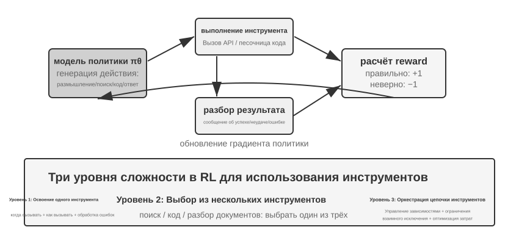
Использование инструментов расширяет границы возможностей агента от «рассуждения самой модели» до «взаимодействия с внешними системами через вызовы» — это ключевой шаг на пути к практической применимости агента. По градиенту сложности обучение RL для использования инструментов сталкивается с тремя уровнями задач. Первый уровень — научиться пользоваться одним инструментом: понимать спецификацию входа-выхода, улавливать момент вызова, обрабатывать сообщения об ошибках. Второй уровень — делать выбор в экосистеме из множества инструментов: среди десятков инструментов понимать, когда нужно искать, когда — выполнять код, а когда — разбирать документ. Третий уровень — оркестрация цепочки инструментов: выявлять зависимости между инструментами, распознавать взаимоисключающие ограничения, оптимизировать соотношение затрат и эффективности.
Вокруг вызова инструментов сейчас активно развиваются два направления RL-обучения агентов. Первое — усиление за счёт поиска: типичный пример — Search-R1 (Jin и др., 2025), где RL обучает модель самостоятельно решать в процессе рассуждения, когда запускать поиск, и использовать полученные результаты для продолжения рассуждения, вместо того чтобы следовать жёсткому пайплайну RAG. Второе — программная инженерия: типичный пример — обучающие среды вроде SWE-Gym, где кодинг-агент проходит многоходовое RL-обучение на реальных кодовых базах, итеративно редактируя, запуская и исправляя код. Общая проблема обоих направлений — распределение доверия на длинных временных горизонтах (итоговый успех нужно приписать какому-то решению, принятому десятки шагов назад) и инженерия среды (создание стабильной, воспроизводимой, масштабируемо-параллелизуемой обучающей среды).
В RL для инструментов есть ещё одна инженерная деталь, без которой не обойтись: маскирование потерь (loss masking) для токенов, поступающих из обратной связи среды. В одной траектории вызова инструмента есть и токены, сгенерированные самой моделью (рассуждение, параметры вызова инструмента), и токены, возвращённые средой (вывод интерпретатора кода, результаты поиска, реплика службы поддержки). Вторые не порождаются политикой, а задаются средой — если учитывать их в градиенте политики, модель начнёт обучаться «предсказывать, что выдаст песочница», что и уводит от цели оптимизации, и делает обучение нестабильным. Стандартный подход — маскировать токены обратной связи среды при вычислении потерь и передавать градиент только по токенам, сгенерированным самой моделью. Это один из ключевых технических приёмов ReTool (маскирование градиента для токенов обратной связи внутри тегов <interpreter>), а также то, что в Search-R1 называют «маскированием токенов, полученных при поиске, ради стабильности обучения»; этот механизм встроен в такие ведущие фреймворки обучения, как veRL, AWorld и другие.
Эксперимент 7-15 ★★★: ReTool — усиление решения математических задач интерпретатором кода
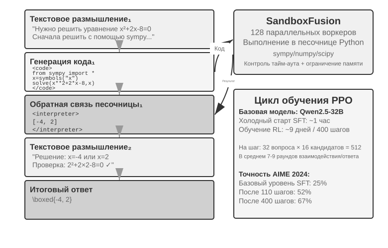
Чисто текстовое рассуждение легко накапливает ошибки при точных числовых вычислениях, символьных операциях или решении сложных уравнений (например, при десяти последовательных умножениях на каждом шаге можно ошибиться), тогда как интерпретатор кода даёт исполняемый интерфейс для точной проверки. ReTool интегрирует исполнение кода в реальном времени в цикл рассуждения RL, позволяя модели самостоятельно учиться, когда и как использовать инструмент, ориентируясь на обратную связь по результатам.
Обучение проходит в два этапа. Разогрев SFT (около 1 часа) преобразует данные чисто текстового рассуждения в траектории, усиленные кодом, закладывая базовый паттерн вызова инструмента. Обучение RL (на базе модифицированного PPO из veRL, данные обучения взяты из DAPO-Math-17k, около 9 дней, 400 шагов) оптимизирует политику через rollout, переплетённые с исполнением кода в реальном времени: модель генерирует код, обёрнутый в теги
<code>, песочница исполняет его и возвращает результат в тегах<interpreter>, модель продолжает генерацию — формируется смешанная последовательность рассуждения вида «текст 1 + код 1 + обратная связь 1 + ... + ответ». На каждом шаге обучения нужно сгенерировать 512 ответов (32 вопроса × 16 кандидатов), в среднем 7-9 раундов взаимодействия на ответ, общий объём обрабатываемых токенов вырос с исходных 25M до 40M.Сам ReTool использует стандартный PPO, не меняя алгоритм оптимизации. Но данные для его обучения взяты из DAPO-Math-17k команды DAPO, и здесь уместно попутно рассказать о недавно ставшем популярным алгоритме DAPO (Yu и др., 2025) — он вносит четыре улучшения поверх стандартного PPO, и главная цель этих улучшений — не дать модели преждевременно сойтись к единственной политике (умению решать задачу только одним способом):
- Clip-Higher (расширение верхней границы отсечения для исследования): стандартный алгоритм PPO ограничивает величину изменения политики за один шаг обучения — слишком большие изменения могут дестабилизировать обучение. Но слишком жёсткое ограничение мешает модели «отваживаться пробовать новые пути». Clip-Higher умеренно ослабляет это ограничение: когда модель случайно обнаруживает явно более выгодный путь, ей позволяют смелее двигаться в его сторону, поощряя тем самым исследование.
- Token-Level Policy Gradient Loss (равный вес каждого токена): исходный GRPO нормализует потери на уровне сэмпла — сначала усредняя внутри каждого ответа по числу токенов, затем усредняя между сэмплами, — из-за чего каждый токен в длинном ответе оказывается разбавлен
1/|o_i|: качественная длинная цепочка рассуждений не получает достаточного вознаграждения, а избыточное многословие не получает достаточного наказания. Token-Level Policy Gradient Loss в DAPO как раз убирает этот слой усреднения по сэмплам, заменяя его единой нормализацией по всем токенам всего батча, так что вес каждого токена одинаков; прямое следствие — длинный ответ получает градиентный вклад, соразмерный своей длине.- Dynamic Sampling (умное распределение вычислительных ресурсов): во время обучения динамически регулируется число сэмплов на каждую задачу — для простых задач, которые модель уже стабильно решает, сэмплов берётся меньше (дальнейшая практика почти ничего не даёт), а для задач с успешностью в «обучаемом диапазоне» 20-80% — больше (именно на них можно больше всего научиться); вычислительные ресурсы концентрируются на самых ценных для обучения данных.
- Overlong Reward Shaping (наказание за избыточную многословность): к чрезмерно длинным ответам применяется мягкий штраф. Если модель сгенерировала очень длинное рассуждение, но это не привело к лучшему ответу, система снижает оценку вознаграждения, приучая её мыслить более лаконично и эффективно.
Возвращаясь к ReTool. На AIME 2024 при обучении на базе Qwen2.5-32B-Instruct к промежуточной контрольной точке на 110-м шаге точность выросла с исходных примерно 25% до 52% (Best-of-30 достигает 85%); итоговый результат из статьи — 67,0% после 400 шагов, тогда как базовая линия с чисто текстовым RL даже за 1080 шагов даёт только 40,0%. Все цифры динамики обучения в этой рамке эксперимента приведены именно для этой настройки с моделью 32B.
Эмерджентные способности: самокоррекция кода (распознавание ошибок исполнения и самостоятельная генерация исправленной версии), переход вызова инструмента от поздней проверки к ранней разведке, повышение эффективности рассуждения (длина сократилась на 40%, но точность при этом не упала, а выросла).
Динамика обучения на первых 110 шагах проходит через три фазы: на начальном этапе (0-20 шагов) быстро осваиваются базовые способы использования инструмента, точность растёт на 0,5% за шаг; на среднем этапе (20-70 шагов) происходит колебательное исследование, длина ответа вырастает с 2500 до пикового значения 4700 токенов, резко возрастает разнообразие политик; на позднем этапе (70-110 шагов) наступает устойчивая сходимость, длина откатывается до 4400 токенов, производительность продолжает расти при уменьшающихся колебаниях.
Разница во времени обучения между SFT и RL коренится в разной плотности информации: в SFT у каждого токена есть обучающий сигнал, а в RL на весь эпизод приходится только один сигнал успеха или неудачи. На практике время одного шага обучения растёт вместе с длиной ответа, и небольшое число чрезмерно длинных ответов может заметно растянуть весь цикл обучения.
Эксперимент 7-16 ★★★: AWorld-train — обучение использованию инструментов в песочнице
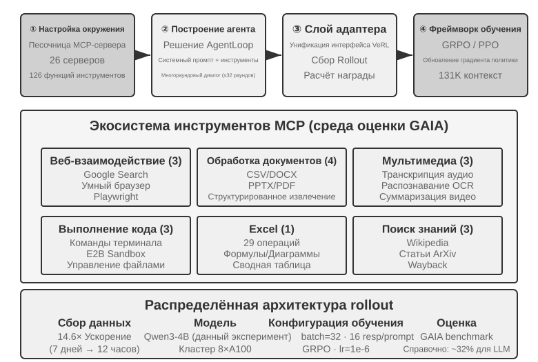
GAIA — один из самых сложных бенчмарков для оценки агентов. Даже модели с большим числом параметров после масштабного обучения могут достичь лишь около 32%, что заметно отстаёт от систем с высокими результатами. В этом эксперименте используется относительно небольшая модель (Qwen3-4B), главная цель — продемонстрировать полный процесс «обучения через практику».
Обучающая среда AWorld — это песочница из серверов MCP, предоставляющая 26 серверов и 126 функций-инструментов, охватывающих веб-взаимодействие (поиск Google, умный браузер, Playwright), обработку документов (CSV/DOCX/PPTX/PDF), обработку мультимедиа (транскрипцию аудио, OCR, суммаризацию видео), выполнение кода (терминальные команды, песочница E2B), обработку Excel (29 операций корпоративного уровня), поиск знаний (Wikipedia, ArXiv, Wayback Machine). Ограничения скорости реальных API, нестабильность сервисов, блокировки аккаунтов делают обучение непосредственно в продакшн-среде неосуществимым — построение стабильной, контролируемой и воспроизводимой имитационной среды является инженерной предпосылкой для RL-обучения с множеством инструментов.
Качественный переход от одного инструмента к многим инструментам заключается в следующем: с одним инструментом достаточно решить, «когда» и «как» его вызывать; с многими инструментами нужно ещё решить, «какой именно» вызвать и «как их комбинировать», что вносит сложность комбинаторного взрыва и управления зависимостями — между инструментами возникают предварительные зависимости (сначала нужно выполнить поиск, чтобы затем открыть конкретную страницу), взаимоисключающие ограничения (некоторые инструменты нельзя вызывать одновременно), различия в стоимости (разные API отличаются по квотам и задержкам). Политике нужно планировать в целом с учётом этих ограничений, а не действовать жадно, выбирая локально оптимальный вариант.
Стоит отметить, что этот эксперимент — открытый обучающий эксперимент, без базовых результатов для сравнения: модели масштаба Qwen3-4B трудно добиться впечатляющих показателей на GAIA, и ценность эксперимента в том, чтобы пройти весь путь «обучения через практику», а не в улучшении метрик. Ориентировочные критерии приёмки и ожидаемые наблюдения таковы: среда стабильно проходит цикл reset и episode (вызовы инструментов, обратная связь, обновление состояния не приводят к сбоям); в процессе обучения кривая среднего вознаграждения растёт; успешность вызова инструментов повышается по мере обучения, и модель постепенно учится делать более разумный выбор и комбинации среди множества инструментов.
Передовые исследования по повышению эффективности использования выборки¶
Предыдущие эксперименты уже наглядно показали ключевую ценность RL в обучении агентов, но за это заплачена высокая цена в виде объёма выборки. Время RL-обучения ReTool превышает время SFT более чем в 200 раз (9 дней против 1 часа), что может быть неприемлемо в условиях ограниченных ресурсов или при необходимости быстрой итерации.
Низкая эффективность использования выборки в RL имеет множество причин (высокая дисперсия, разреженное вознаграждение, сложность повторного использования данных на политике и т. д.), и один из важных её источников — это model-free (безмодельная) природа основных методов градиента политики: они не строят модель динамики среды (world model, «каким станет мир после выполнения действия») и с трудом напрямую используют богатую информацию, содержащуюся в единичной обратной связи (эти два аспекта связаны, но не тождественны). Богатая обратная связь, которую среда возвращает при каждом взаимодействии (причина ошибки, недостающее поле, подсказка о правильном процессе), в основном пропадает впустую — эта проблема уже подробно разобрана ранее в разделе «Затруднение разреженного вознаграждения». Рассмотрим сценарий телефонного звонка в службу поддержки: сотрудник явно сообщает «нужны последние четыре цифры кредитной карты для верификации личности», но model-free RL может учиться только на итоговом сигнале успеха или неудачи (награда 0 или 1), не имея возможности напрямую использовать этот явный отклик, — и лишь через сотни случайных проб может случайно наткнуться на предоставление данных карты. Человек же, услышав такую подсказку, сразу же её запомнит и в следующий раз подготовится заранее.
Вокруг этого узкого места в данной главе уже намечены два взаимодополняющих подхода. Первый — превратить информацию, теряемую в обратной связи среды, обратно в обучаемое вознаграждение: явные, машинно-проверяемые сигналы вроде «служба поддержки требует сначала подтвердить личность», «эта команда деструктивна», «доказан ещё один шаг» вписываются прямо в функцию вознаграждения — это RLVP, о котором говорилось в разделе 7.10 (особенно его способ частичного вознаграждения «за достижимый прогресс», который позволяет спасти выброшенные впустую сэмплы из полностью проваленных групп). Второй подход, который будет подробно раскрыт в этом разделе, — сделать сигнал обучения плотнее на каждом шаге: вместо того чтобы получать всего один скалярный сигнал успеха или неудачи в конце задачи, лучше получать направляющий сигнал в каждой точке траектории — это On-Policy Distillation.
On-Policy Distillation: сочетание достоинств SFT и RL¶
On-Policy Distillation (дистилляция на политике) была системно предложена и продвинута Thinking Machines Lab в 2025 году8 и сегодня стала весьма распространённым методом постобучения — стоит разобрать его отдельно и подробно. Чтобы понять, какую проблему он решает, сначала посмотрим на один фатальный недостаток каждого из методов — SFT и RL: он как раз сочетает достоинства обоих.
Недостаток SFT: Learner-Sampler Mismatch (несоответствие ученика и генератора выборки). Обучающие данные для SFT генерирует «генератор выборки» (модель-учитель или человек-эксперт), а «ученик» (обучаемая модель) лишь пассивно имитирует эти правильные пути. Проблема в том, что сам ученик, действуя самостоятельно, неизбежно ошибается и попадает в отклонившиеся состояния, которых никогда не было в обучающих данных, — и он никогда не видел, как из таких состояний вернуться на верный путь, поэтому небольшие ошибки накапливаются в большие. Это как ученик, который выучил только образцовые решения: стоит ему один раз ошибиться на каком-то шаге, и он совершенно не понимает, как выправиться. Корень проблемы в том, что «кто идёт» во время обучения (учитель) и «кто идёт» при развёртывании (сам ученик) — не одно и то же распределение.
Недостаток RL: слишком разреженный сигнал. В RL ученик идёт сам (на политике), что решает проблему несоответствия распределений, но каждая пройденная до конца траектория даёт лишь один скалярный сигнал успеха или неудачи, и то, как именно нужно скорректировать каждый промежуточный шаг, приходится выводить методом сотен и тысяч проб и ошибок.
On-Policy Distillation сочетает достоинства обоих: ученик сам генерирует траектории (On-Policy, решая проблему несоответствия распределений), а более сильный учитель одновременно оценивает каждый шаг пути ученика на уровне отдельных токенов (Dense Signal, решая проблему разреженности сигнала). Одной фразой сравним три метода: SFT — это «оффлайн + плотный сигнал» (с несоответствием распределений), RL — это «онлайн + разреженный сигнал» (с разреженной обратной связью), On-Policy Distillation — это «онлайн + плотный сигнал» — оба недостатка устранены сразу.
Как именно происходит оценка? Учитель не просто судит, правильный или неправильный этот шаг ученика, а прямо выдаёт полное распределение — «в данной позиции, с какой вероятностью должен быть выбран каждый следующий токен». Например, ученик написал что-то вроде «сначала выполнить запрос API, затем разобрать возвращённое значение…»; на этом месте, по мнению учителя, «запрос» должен занимать 80% вероятности, «вызов» — 15%, остальное — 5%; цель обучения ученика — приблизить своё распределение предсказаний в каждой позиции к распределению учителя. Технически это реализуется через минимизацию KL-дивергенции между двумя распределениями (KL-дивергенция измеряет различие между двумя вероятностными распределениями: чем ближе они друг к другу, тем меньше её значение, а при совпадении оно равно нулю; подробно об этом рассказано в разделе 7.7). По сравнению с бинарным сигналом успеха-неудачи в конце, такое пословное согласование распределений на порядок и более плотнее.
Эффект впечатляющий: на задачах вроде математики для достижения такого же уровня производительности требуется примерно в 10 раз меньше шагов обучения, чем при чистом RL. Особенно заметно преимущество на задачах с длинными цепочками рассуждений — на каждом шаге есть учитель, указывающий путь, и ученик быстро учится исправлять ошибки, вместо того чтобы всё дальше уходить по ошибочному пути. Метод попутно снижает переобучение: в стандартном RL при многократном обучении на одном и том же промпте модель легко «зазубривает» итоговый ответ, а здесь каждая траектория разная, и учитель даёт обратную связь применительно к конкретной траектории, так что усваивается общая стратегия, а не конкретный ответ — благодаря этому существенно повышается эффективность повторного использования данных.
Этот метод особенно ценен в сценариях многоходовых агентов: сигнал успеха или неудачи в многоходовых задачах появляется в самом конце, будучи одновременно разреженным и запаздывающим, и пословное распределение учителя как раз восполняет недостающее направляющее указание на каждом промежуточном шаге. Но у метода есть одно условие, которое как раз перекликается с главной линией этой главы: должна существовать достаточно реалистичная имитационная среда, где ученик может свободно исследовать — иначе, когда ученик попадёт в отклонившееся состояние, которого учитель тоже никогда не видел, оценки учителя тоже окажутся ненадёжными. Ценность On-Policy строится именно на том, что «ученик действительно исследует в распределении развёртывания».
Закономерность «плотный сигнал побеждает разреженный» получила довольно чистое подтверждение в одном чисто агентном сценарии. Во второй главе, рассказывая о строке состояния, мы упоминали «ощущение времени» агента — срочность, настойчивость, бдительность — которое во время вывода можно задать просто инструкцией из руководства по эксплуатации; но чтобы небольшая модель на 8B освоила это ощущение ритма без подсказки, прямо на уровне весов, — это уже задача постобучения не из простых. Автор и его коллеги последовательно опробовали на этой задаче DPO и четыре разных рецепта обучения с подкреплением, и все четыре варианта RL как раз наткнулись на четыре режима отказа, обсуждавшихся ранее в этой главе: жёсткое пороговое вознаграждение оказалось слишком разреженным, подавляющее большинство rollout получало ноль баллов, преимущество внутри группы обнулялось (разреженность); после перехода на градуированное вознаграждение сигнал стал плотнее, но косвенная метрика не соответствовала реальному проценту прохождения (несовпадение цели); оценка только первого хода ответа привела к появлению отговорочных коротких ответов, которые в многоходовой оценке оказались ещё хуже (несоответствие формы rollout); наконец, когда форму rollout выровняли по оценке, и обучающее вознаграждение действительно начало расти, политика за несколько шагов схлопнулась к единственному шаблону, и её не смог удержать даже вчетверо усиленный якорь KL (крах обучения). Ни один из рецептов не смог преодолеть потолок SFT. При переходе на On-Policy Distillation — с использованием замороженной модели-учителя Qwen3-32B, которая пословно давала целевое распределение на многоходовых траекториях, пройденных самим учеником, — обучение сходилось плавно, и во всех четырёх условиях процент прохождения оказался выше базовой линии SFT из того же источника на 23-47 процентных пунктов9. Четыре разреженных сигнала подряд провалились, один плотный сигнал сработал — это ещё раз подтверждает главную мысль этого раздела: постобучение чаще застревает не потому, что функция вознаграждения спроектирована недостаточно хитро, а потому, что сам сигнал недостаточно плотный.
Что делать, если нет более сильного учителя: On-Policy самодистилляция¶
Мощь On-Policy Distillation исходит от учителя, но отсюда же и жёсткое предварительное условие: должна существовать модель-учитель, заметно превосходящая ученика. Во многих сценариях это не выполняется. Если вы обучаете модель для вертикальной предметной области, где возможности существующих моделей ограничены, учителя просто неоткуда взять. Значит ли это, что без более сильного учителя дивиденды плотного сигнала нам недоступны?
Изящное решение этой задачи — On-Policy Self-Distillation (OPSD, самодистилляция на политике)13: одна и та же модель исполняет роли и учителя, и ученика, а разница — только в контексте. Учительская версия видит «привилегированную информацию» (privileged information) — например, эталонный ответ на задачу или проверенное правильное решение — и ей не нужно действительно «уметь решать» эту задачу: достаточно, держа ответ в руках, рационализировать каждый шаг, пройденный учеником, и выдать пословное целевое распределение; ученическая версия видит только саму задачу и на собственных сгенерированных траекториях подтягивается к учительской. Здесь работает такая интуиция: «объяснить решение по готовому ответу» намного проще, чем «решить задачу самостоятельно» — это изоморфно асимметрии «проверка—генерация», на которой стоит RLVR, только здесь эта асимметрия используется для порождения плотного сигнала обучения, а не разреженного скаляра успеха-неудачи.
По сравнению с RLVR у OPSD два ключевых преимущества. Во-первых, исчезает зависимость от проверяемой награды. RLVR предполагает существование автоматического верификатора, тогда как источники привилегированной информации для OPSD гораздо шире: это может быть эталонный ответ, но также и более богатый системный промпт, человеческие демонстрации, документация по предметной области — подходит любая информация, которая «позволяет модели задним числом внятно объяснить правильное поведение». Во-вторых, сигнал обучения намного плотнее, чем в RL. В RL на одну траекторию приходится один скаляр награды, а OPSD предоставляет полное вероятностное распределение в каждой позиции траектории, так что эффективность по токенам заметно выше, чем у RL-методов. Можно сказать, что OPSD заменяет «более сильного учителя» «привилегированной информацией» и тем самым становится реалистичным путём к смягчению проблемы эффективности использования выборки.
Разумеется, границы этой парадигмы тоже ясны, и главная из них вытекает из того, что потолок способностей учителя зафиксирован на самом ученике: величина выигрыша зависит от того, сколько дополнительных способностей способна дать привилегированная информация. Если модель даже с ответом в руках не может внятно изложить ход решения (скажем, ответ получен полным перебором, а не рассуждением, которое можно выразить словами), самодистилляции неоткуда взять сигнал. В существующих исследованиях уже описаны режимы отказа наивного OPSD — например, в ходе самодистилляции модель постепенно утрачивает исходный стиль мышления, и для стабилизации требуется дополнительная регуляризация14. Конструкция «одна модель, разные контексты, учитель и ученик друг для друга» продолжает быстро развиваться, но она уже открыла выход из распространённого тупика «нет более сильного учителя».
Полная картина постобучения и практические рекомендации¶
Эта глава прошла долгий путь от предобучения — «предсказания следующего слова». SFT закрепляет формат, RL прорывается к обобщению, многоходовые задачи вносят проблему распределения кредита (credit assignment), дизайн наград расширяется от награды за результат до сигнала пути — «награждать результат, ограничивать процесс», а использование инструментов приводит к комбинаторному взрыву. Все эти эксперименты объединяет одна нить: то, чему учится модель, определяется тем, чему учит её обучающий сигнал; а качество сигнала определяется прежде всего данными и средой, а не алгоритмом.
Согласованная парадигма: ранее (в резюме эксперимента GeneralPoints) мы уже описывали эту парадигму через образ китайской живописи — «сначала форма, потом дух»: SFT доводит модель до состояния «формат стабилен, зачатки способности присутствуют» и на этом останавливается, а RL уже на этой основе формирует политику. Оба метода работают на разных уровнях: SFT закрепляет протокол и структуру (формат JSON, шаблоны диалога, интерфейсы инструментов), RL оптимизирует политику и обобщение (арифметические правила, пространственное мышление, последовательности действий). Ключевой баланс: избыточное обучение на SFT приводит к схлопыванию модели в тренировочное распределение, что ограничивает пространство оптимизации для RL.
Ниже перечислены распространённые ловушки, на которые стоит обратить внимание, — умение их распознать зачастую спасает от потери ресурсов лучше, чем владение техническими деталями:
- Чрезмерная опора на постобучение для запоминания фактов — фактические знания должна поддерживать RAG (с возможностью динамического обновления, отслеживания источника, без забывания при обучении), а постобучение должно фокусироваться на том, «как использовать знания».
- Введение RL до стабилизации формата — если модель не может стабильно выдавать даже базовый JSON (доля ошибок парсинга превышает 20%), обучение с RL полностью провалится. Сначала обязательно нужен SFT.
- Неудачный дизайн функции награды приводит к взлому награды (reward hacking) — модель учится находить лазейки в системе награды ради высокого балла, а не реально выполнять задачу (например, генерировать бессмысленный длинный текст, если награда учитывает только длину ответа). Нужно оценивать конечную цель, а не промежуточные метрики.
- Игнорирование достоверности симуляции — если симуляция слишком упрощена (служба поддержки всегда отвечает по фиксированному шаблону) или реакции среды нереалистичны (сообщения об ошибках не соответствуют продакшену), обученная политика полностью откажет в реальных условиях. Стоимость построения высокодостоверной среды симуляции может превышать стоимость самого обучения.
- Избыточное обучение снижает обобщение — если потери на обучении продолжают падать, а качество на валидации, наоборот, ухудшается, значит модель заучивает детали обучающих данных наизусть. SFT особенно подвержен этой проблеме, поэтому ранняя остановка по-прежнему критически важна; чрезмерная оптимизация в RL также приводит к переобучению политики под текущее распределение задач.
- Коллапс функции ценности и недостаточное исследование — неточная оценка ценности в PPO приводит к смещению при вычислении преимущества, что проявляется в резких колебаниях кривой обучения. Слишком низкая температура или недостаточная случайность заставляют агента застревать в локальном оптимуме.
- Недооценка вычислительной стоимости RL — задача, на которой SFT показывает хорошие результаты, при переходе на RL может потребовать в 10–100 раз больше времени обучения. Если тестовое распределение сильно совпадает с обучающим, SFT может оказаться уже достаточным.
- Низкое качество обучающих данных — SFT напрямую усваивает шум и смещения в данных, закрепляя ошибки в параметрах; RL, хотя и может через исследование найти более удачную политику, при систематическом смещении модели награды будет оптимизироваться в неверном направлении.
Ключевой принцип: прежде чем вкладывать масштабные ресурсы, проверьте ключевые гипотезы на небольшом эксперименте — небольшой объём данных для проверки, может ли SFT стабилизировать формат; упрощённая среда для проверки сходимости RL; небольшая выборка для проверки, отражает ли функция награды реальную цель. Быстрый провал более приемлем, чем масштабный провал.
Синергия с RAG/ICL: эти три подхода не являются взаимоисключающими, поскольку воздействуют на разные части системы. ICL обеспечивает мгновенную адаптацию без изменения параметров с помощью примеров, правил и текущего состояния, однако с ростом контекста увеличиваются задержка и стоимость; RAG размещает факты и свидетельства во внешней базе знаний, которую можно динамически обновлять и источники которой можно прослеживать; постобучение записывает в параметры многомерное восприятие, стиль генерации и неявные стратегии принятия решений. Выбор определяется не только тем, насколько долго задача остаётся стабильной, но прежде всего тем, можно ли достаточно полно выразить соответствующую способность внешними символами. Такие способности, как распознавание медицинских изображений и естественная интонация, часто требуют обновления параметров даже в непрерывно меняющейся предметной области; и наоборот, долгосрочно стабильные правила одобрения денежных переводов должны детерминированно обеспечиваться кодом, а не только памятью модели.
Надёжные системы обычно сочетают эти методы: RAG управляет фактами и свидетельствами, ICL позволяет быстро экспериментировать со стратегиями, которые можно выразить языком, программы закрепляют детерминированные процессы и жёсткие ограничения, а способности, которые трудно выразить явно и которые должны широко обобщаться, записываются в параметры посредством постобучения. Постобучение также позволяет реализовать дистилляцию модели — перенос способностей мощной большой модели в более дешёвую малую.
Резюме главы¶
Суть постобучения модели — записать стратегию взаимодействия в параметры.
SFT и RL находятся не в конкурентных, а в последовательных отношениях: сначала SFT стабилизирует формат вывода (иначе сигнал награды для RL просто невозможно вычислить), затем RL на этой основе учится обобщать. «SFT запоминает, RL обобщает» — это не лозунг, а измеримое явление.
Есть ещё два вывода, проходящих через всю главу, которые стоит запомнить больше, чем любой алгоритм. Первый: данные и среда важнее алгоритма — достаточно уметь пользоваться готовым алгоритмом RL, а истинную разницу создают достоверность среды симуляции и качество обучающих данных; когда реальную среду построить невозможно, моделирование среды с помощью модели (синтез возвращаемых значений инструментов, симуляция динамики среды) — тоже жизнеспособный путь, но помните: смещения симулятора — это потолок обучения; фильтровать можно не только ответы, само распределение обучающих задач также может стать объектом оптимизации. Во многих сценариях, если данные для SFT достаточно качественны, RL может даже не понадобиться. Второй: главное узкое место современного RL — это эффективность использования выборки: On-Policy Distillation, делающий сигнал на каждом шаге более плотным, и штраф за путь по верификации RLVP («награждать результат, штрафовать путь», спасающий полностью провальные группы выборок с помощью частичной награды за достижимый прогресс), превращающий потраченную впустую обратную связь среды в обучаемый сигнал, — сейчас выглядят двумя наиболее перспективными направлениями. Их объединяет всё та же идея — превращать информацию, которая уже присутствует в среде и данных, но теряется при чисто результатной награде, обратно в то, чему модель способна научиться. Когда нет более сильного учителя, у этого подхода есть и вариант самодистилляции: OPSD заставляет одну и ту же модель в двух ипостасях — «учитель, видящий ответ» и «ученик, видящий только задачу» — наблюдать друг за другом, принося пословный плотный сигнал в задачи, где награда не поддаётся верификации.
Эта глава ответила на вопрос о том, «как обучать» посредством обновления параметров. В следующей главе параметры модели вновь рассматриваются как часть целостной системы агента: параметры — лишь один из четырёх носителей обновления наряду со знаниями, инструкциями и программами, а специфическая проблема состоит в том, как получать достоверный обучающий сигнал из траекторий развёрнутой системы, выбирать правильное место обновления и управлять проверкой, выпуском и откатом всех кандидатных версий. Когда потребуется обратиться к конкретным алгоритмам обучения, глава 8 будет напрямую ссылаться на эту главу, не повторяя их изложение.
Вопросы для размышления¶
- ★★ Катастрофическое забывание — когда тонкая настройка под конкретную задачу разрушает исходные общие способности модели (например, общий вызов инструментов) — особенно болезненно в сценариях с агентами. По сравнению с полной тонкой настройкой параметров, LoRA замораживает веса базовой модели и несёт меньший риск забывания, но не является иммунной к нему полностью. Какие ещё стратегии могут дополнительно смягчить забывание способностей при тонкой настройке?
- ★★ Постобучение закрепляет способности в весах модели («мышечная память»), а обучение в контексте помещает знания во входные данные во время вывода. Но некоторые способности (например, доменные знания) можно освоить как через постобучение, так и через few-shot примеры. По какому критерию вы решали бы, каким путём должна идти та или иная способность?
- ★★ Дистилляция модели позволяет малой модели перенимать поведение большой. По уровню способностей дистиллируемые модели можно условно разделить на три категории — Chat-модель (однораундовый диалог, прямой ответ), Reasoning-модель (с длинной цепочкой рассуждений перед ответом), Agentic-модель (многораундовый вызов инструментов, взаимодействие со средой). В чём различаются сложности дистилляции этих трёх типов? (Подсказка: отталкивайтесь от вопроса «что именно мы дистиллируем» — стиль вывода, полную траекторию рассуждений или стратегию принятия решений при взаимодействии со средой; какие токены траектории нужно учить, а какие возвращены средой и учить их не нужно; а также насколько поздно и насколько разрежённо появляется сигнал успеха/неудачи.)
- ★★★ В многораундовом взаимодействии агента проблема отнесения награды (credit assignment) стоит острее, чем в однораундовом — итоговый успех или неудачу трудно отнести к решению именно 3-го или именно 7-го раунда. Как бы вы спроектировали стратегию распределения награды?
- ★★★ Если у вас фиксированный бюджет (например, $10,000) на улучшение агента службы поддержки, как бы вы распределили его между контекстом и знаниями, Prompt/Skills, программными ограничениями и обучением параметров? От каких факторов зависело бы ваше решение?
- ★★★ При отсутствии явной функции награды и малом количестве примеров, автономная реализация обучения моделью некоторыми считается конечной целью постобучения. Насколько текущие методы обучения с RL далеки от этой цели? Откуда, по вашему мнению, скорее всего придёт следующий прорыв?
- ★★ В этой главе указано, что стоимость тонкой настройки LoRA не так высока. Возможно ли тогда обучать отдельный собственный LoRA для каждого пользователя (или каждой компании-клиента), записывая память пользователя или знания компании в параметры, а не храня их во внешней базе знаний, как в третьей главе? В каких сценариях «запись памяти в параметры» имеет преимущество перед «хранением памяти в базе знаний»? А в каких сценариях это дало бы обратный эффект?
- ★★★ On-Policy Distillation опирается на более мощную модель-учителя для надзора за студентом. Но исследование OpenAI о Weak-to-Strong Generalization выдвинуло противоречащий интуиции вывод: сигнал наблюдения от слабой модели иногда способен пробудить у сильной модели скрытые, но неактивированные способности. Если применить эту идею к обучению агентов, возможна ли «обратная дистилляция» — «малая модель обучает большую»?
- ★★ Модель наградного процесса (PRM) оценивает каждый шаг рассуждения, а модель наградного результата (ORM) смотрит только на итоговый результат. Но что заслуживает большей награды — «правильный процесс, приведший к неверному результату» или «неверный процесс, случайно давший верный результат»? Как бы вы взвешивали это в сценариях многошагового вызова инструментов агентом?
- ★★★ Наборы данных для оценки, рассмотренные в этой главе (такие как SWE-Bench Verified, τ²-bench, AndroidWorld), можно использовать как для оценки, так и для постобучения. Но если использовать оценочный набор для обучения, он перестаёт быть независимым набором для оценки — не нарушает ли это базовый принцип разделения обучающей и тестовой выборки? Динамическая генерация параметров τ²-bench и параметризованные шаблоны AndroidWorld в некоторой степени смягчают эту проблему, но сама структура шаблона всё ещё остаётся фиксированной. Как найти баланс между полным использованием обучающей ценности оценочных данных и сохранением независимости оценки?
- ★★★ В этой главе предложена парадигма обучения «сначала форма, потом дух»: SFT доводит модель до состояния «формат стабилен, зачатки способности присутствуют» и на этом останавливается, после чего происходит переход к RL. Но на практике как определить, что SFT уже «достаточно», и пора переключаться?
- ★★★ Динамика обучения ReTool (см. эксперимент 7-15) показывает, что небольшое число сверхдлинных ответов может значительно затянуть весь цикл обучения — подавляющее большинство rollout в пакете уже сгенерировано, но приходится ждать завершения тех нескольких самых длинных ответов, и в это время загрузка GPU кластера остаётся низкой. Как повысить эффективность использования ресурсов обучающего кластера в сценариях с таким длинным хвостом ответов?
- ★★★ Когда Agent обучается на средах, симулируемых LLM (например, симулированный поисковый движок, симулятор пользователя), объект его взлома смещается с «правил реальной среды» на «систематические смещения и лазейки самого симулятора». Какие конкретные формы reward hacking могут возникнуть при таком обучении и как их предотвращать?
-
Schulman, John and Thinking Machines Lab, «LoRA Without Regret», 2025. ↩
-
Ouyang, Long et al., «Training Language Models to Follow Instructions with Human Feedback», OpenAI, 2022. ↩
-
Gao, Leo, John Schulman, and Jacob Hilton, «Scaling Laws for Reward Model Overoptimization», OpenAI, 2023. ↩
-
Rafailov, Rafael et al., «Direct Preference Optimization: Your Language Model is Secretly a Reward Model», 2023. ↩
-
Lightman, Hunter et al., «Let's Verify Step by Step», OpenAI, 2023. ↩
-
Silver, David and Richard S. Sutton, «Welcome to the Era of Experience», 2025. ↩
-
Дизайн штрафа за путь, четыре принципа и экспериментальные данные этого раздела см. Li, Bojie and Noah Shi, «RLVP: Penalize the Path, Reward the Outcome», 2026. arXiv:2607.07435. ↩
-
Метод и эксперименты On-Policy Distillation см. Thinking Machines Lab, «On-Policy Distillation», 2025. ↩
-
Это сравнение подходов к постобучению для чувства времени у агента — режимы отказа DPO и четырёх видов RL, а также прорыв, достигнутый On-Policy Distillation — см. Li, Bojie and Noah Shi, «Agents That Sense Physical Time: Urgency, Persistence, and Vigilance as Missing Controls for LLM Agents», 2026. https://01.me/research/physical-time-agent ↩
-
Kulikov, Ilia, et al. Autodata: An Agentic Data Scientist to Create High Quality Synthetic Data. arXiv:2606.25996, 2026. ↩
-
Sun, Hao, et al. "ZeroSearch: Incentivize the Search Capability of LLMs without Searching", 2025. arXiv:2505.04588. ↩
-
"DreamGym: Scaling Agent Learning via Experience Synthesis", 2025. arXiv:2511.01824. ↩
-
Zhao, Siyan, et al. "Self-Distilled Reasoner: On-Policy Self-Distillation for Large Language Models", 2026. arXiv:2601.18734. ↩
-
Shen, Ziqi, et al. "Purified OPSD: On-Policy Self-Distillation Without Losing How to Think", 2026. arXiv:2607.02234. ↩